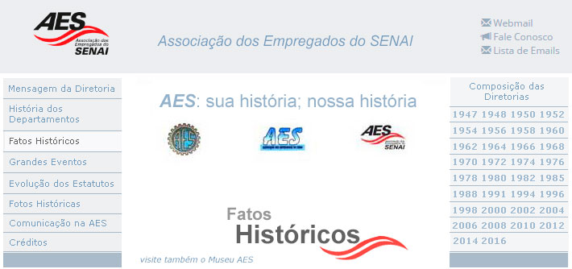

Uma história pode ser contada por meio de um texto corrido, um filme, um álbum fotográfico e neste campo optamos pela citação de alguns fatos, apresentados em ordem cronológica, para ilustrar o caminho percorrido pela Associação dos Empregados do SENAI-AES desde sua fundação. São muitas as realizações: eventos, promoções, cursos, convênios, campeonatos, benefícios, concursos, serviços, festivais, passeios, festas, encontros, shows, torneios; uma variedade de acontecimentos e ações que concorrem para a participação efetiva e para o bem estar dos associados. Uma passagem sobre esses fatos pode ser uma maneira interessante de se rever essa história.
Em 21/11/1947 ocorreu a Assembleia de Fundação da AES que contou com 487 participantes. Durante esse evento teve lugar a aprovação dos Estatutos Provisórios, pré-elaborados por uma Comissão presidida pelo Chefe da Divisão de Ensino do SENAI dr. Atahualpa Guimarães, e a Eleição da primeira Diretoria da Associação, cujo mandato provisório se estendeu até 29/fev/1948. A AES, em sua criação, contava com os seguintes departamentos: Abastecimento, Beneficente, Social-Recreativo, Saúde, Esportivo, Cultural e Editorial. Livro de Atas p 1, 8 e 9
Em dezembro de 1947 a AES montou sua 1ª Árvore de Natal. A árvore foi doada pelo Diretor do Instituto de Menores e adornada com enfeites ofertados pelos associados. Livro de Atas p 10v
Em janeiro de 1948 foi realizada a 1ª Exposição de Arte da AES cujo encerramento contou, em sua 1ª parte, com a palestra A Pintura Através dos Séculos proferida pelo professor Oswaldo Ferraz, Inspetor de Ensino da Secretaria da Educação, Membro da Associação dos Escritores do Estado de São Paulo e conhecido Crítico de Arte e, em sua 2ª parte, com o Recital de Piano do professor Otávio Zuicker, Concertista pelo Conservatório Dramático e Musical de São Paulo. Boletim da AES nº 1 jan/1948 p 3
Em janeiro de 1948, dada a grande repercussão, a 1ª Exposição de Arte promovida pela AES foi reaberta a pedido do Diretor Regional "a fim de que, tendo mostrado desejos de vê-la, S. Exa. o Ministro do Trabalho em visita a São Paulo, tivesse a oportunidade de apreciar os trabalhos expostos." Boletim da AES nº 2 fev/1948 p 2
Em fevereiro de 1948, as duas chapas concorrentes à eleição para renovação da Diretoria e Conselho da AES, de comum acordo, solicitaram o cancelamento de sua candidatura. "Esse cancelamento teve em mira possibilitar a composição de uma chapa única que, apoiada por todos, congraçasse as duas facções em que se vinha cindindo a opinião dos associados, sem o menor proveito para a associação. Surgiu assim, uma chapa conciliação que passou a chamar-se Chapa Única." Foi de grande importância o fato de os interessados em administrar a AES terem optado por uma atitude cooperativa. Boletim da AES nº 2 fev/1948 p 2
Em abril 1948 foram mantidos entendimentos com o SESI visando a utilização, pelos associados, do Hospital, do Departamento Jurídico e da Assistência Social daquela Instituição. A AES passa a prestar serviços complementares importantíssimos aos associados. Livro de Atas p 15; Encarte do Informativo AES nov/1997
Em abril de 1948 a Diretoria da AES aprovou a designação de representantes de Departamentos para atuarem em Taubaté. Surge assim a importante figura do Representante que, por meio da descentralização, possibilita o melhor atendimento aos associados. Livro de Atas p 15v
Em abril de 1948 houve deliberação da Diretoria da AES de utilização de capa azul nos documentos e impressos da Associação. Essa decisão da Diretoria indica a busca de padronização e de identificação com o estilo SENAI. Livro de Atas p 17
Em maio de 1948 foi obtida autorização da Diretoria Regional do SENAI para promover, aos associados, um Jantar Dançante por mês no Restaurante da Administração. Livro de Atas p 18
Em junho de 1948 a AES pediu a colaboração dos associados para definição do título definitivo do Boletim da AES. Para tanto, fez circular na edição de nº 6 de junho, um cupom para preenchimento pelos associados sugerindo o título para o Órgão Oficial da AES. Boletim da AES nº 6 p 1
Em Julho de 1948 foi realizada, sob a direção do sr. Aristides Castanho diretor da Secção de Xadrez, uma partida simultânea entre 19 enxadristas da AES e o professor Gomes Junior da Federação de Xadrez de São Paulo. "A reunião revestiu-se de grande brilho, tendo apresentado resultado geral bastante promissor para os nossos enxadristas, pois o professor Gomes Junior venceu 13 partidas, empatou 2 e perdeu 4." Boletim da AES nº 8 p 1
Em agosto de 1948 foi efetuado um convênio com a União Cultural Brasil-Estados Unidos para a realização de um Curso de Inglês aos associados. A aula inaugural ocorreu em 16 de agosto e contou com a participação dos 88 alunos além das presenças do Diretor Regional do SENAI e do Diretor da União Cultural Brasil-Estados Unidos. Livro de Atas p 21v; Boletim da AES nº 8 p 1
Em setembro de 1948 teve início o Curso de Fotografia da AES a cargo do prof. J. J. Silva Neto. Boletim da AES nº 9 p 1
Em setembro de 1948 iniciou-se o 1º Torneio Interno de Xadrez da AES com 48 enxadristas inscritos. Boletim da AES nº 9 p 2
Em setembro de 1948 foi inaugurada a 1ª Exposição de Fotografias e Desenhos da AES que teve a participação de 114 trabalhos. Boletim da AES nº 10 p 1
Em novembro de 1948 o Órgão Oficial da AES assumiu como definitiva a denominação de Boletim da AES. A partir da edição de nº 11 esse Boletim passou a exibir o emblema da AES. Boletim da AES nº 11 p 1
Em novembro de 1948 foram adquiridos o uniforme e bolas para Voleibol para a Escola de Jundiaí. Voleibol em 1948 significava inovação na área esportiva para a época. Livro de Atas p 23v
Em novembro de 1948 houve articulação com a "Recebedoria do Imposto de Renda de SP" para subsidiar os associados da AES em face desse imposto. Esse era mais um serviço complementar de assessoria aos associados. Livro de Atas p 23v
Em fevereiro de 1949 a AES promoveu um Curso de Motoristas nas categorias amador e profissional, no qual se inscreveram 70 associados e um Curso de Corte e Costura com 16 inscrições. Boletim da AES nº 13 p 1
Em agosto de 1949 o Departamento de Abastecimento da AES passou a contar com um alfaiate para atender aos associados. Boletim da AES nº 14 p 1
Em setembro de 1949 ocorreu a 1ª apresentação da Orquestra e Coro da AES integrada por 19 associados e organizada e regida por Ary Vieira de Albuquerque. Essa apresentação se deu em homenagem aos associados que, como bolsistas, acabavam de regressar da França e ao mesmo tempo apresentar as despedidas aos associados bolsistas que estavam de partida para a Europa. Boletim da AES nº 15 p 1
Em janeiro de 1950, para as eleições da Diretoria e Conselho da AES, registraram-se duas chapas: a "Luiz Alfredo Falcão Bauer" e a "Progressista". O interessante é que alguns concorrentes pertenciam simultaneamente às duas chapas nos cargos de Secretário, Tesoureiro e Conselheiro. Boletim da AES nº 19 p 2
Em março de 1950 a AES contava com 740 associados. Boletim da AES nº 21 p 2
Em 1950 foi instituído o "Auxílio à Aquisição da Casa Própria ou Reforma de Imóvel". Esse benefício, dirigido a Serventes e a Instrutores associados, consistia em empréstimo cedido pelo prazo de 18 meses com juros anuais de 5%. Esse serviço complementar denota a falta de estrutura do sistema vigente na época que por si só justifica a importância do associativismo. Boletim da AES nº 23 p 1
Em 1950 foram abertas as inscrições para o Curso de Radiotécnico para os associados interessados, com aulas a cargo do professor Mário Benedito Pola. Boletim da AES nº 23 p 1
Em 23 de setembro de 1950 aconteceu, como um evento social muito expressivo, a instalação oficial da Sede da AES no 5º andar da Escola SENAI Roberto Simonsen, contando com a presença do Diretor Regional do SENAI dr. Roberto Mange e do Presidente da AES sr. Hélio Del Porto. Essa instalação se deu com uma grande Festa da Primavera, onde foram eleitas a Rainha da Primavera Nilda Borges Furquim e as princesas Anésia José Nahum e Lúcia Nogueira Lima. Boletim da AES nº 24 p 1
Em 1º de junho de 1953 entrou em funcionamento a Caixa Beneficente dos Empregados do SENAI (CABES). Informativo Senai nº 90 p 3
Em abril de 1958, para melhor atendimento aos associados, a AES criou Sub-Postos de Abastecimento nas Escolas do Cambuci, Barra Funda, Santo André e Campo Grande (MT). Descentralização da Cooperativa. Livro de Atas p 42
Em maio de 1958 o Grupo de Teatro da AES encenou a peça "O Secretário de Sua Excelência" em Santo André. Livro de Atas p 43v
Em junho de 1958 a AES promoveu o Baile Caipira de seus associados no salão da Escola Técnica Têxtil - Escola SENAI “Francisco Matarazzo”. Livro de Atas p 44v
Em setembro de 1958 o Departamento de Abastecimento (Cooperativa) da AES iniciava a entrega domiciliar. Livro de Atas p 47
Em setembro de 1958 foi organizada uma visita ao Planetário da Cidade de São Paulo que contou com a inscrição de 332 associados da AES. O Departamento Cultural sempre foi bem atuante. Livro de Atas p 47
Em 27 de setembro de 1958 foram eleitas a Rainha da Primavera Izabel de Carvalho Rosa e as princesas Miramis Pagnoca e Maria de Lourdes Zorzi. Livro de Atas p 47v
Em novembro de 1958 foram desenvolvidos entendimentos com a empresa "Irmãos Guimarães e Cia" para fornecimento de medicamentos com descontos aos associados. Livro de Atas p 49
Em dezembro de 1958 a Festa de Natal da AES foi abrilhantada com um Coquetel e com a contratação de artistas circenses. Livro de Atas p 50
Em 01 de março de 1959 entrou em funcionamento a Caixa de Economia e Assistência Financeira CEAF, com capital subscrito de Cr$ 1.665.000,00, destinada a substituir o Departamento Beneficente da AES. Livro de Atas p51v
Em março de 1959 o Departamento Cultural da AES promoveu uma Exposição de Artes Plásticas no "salão" da Escola SENAI Têxtil. Livro de Atas p 51
Em agosto de 1959 o Departamento de Abastecimento da AES passou a racionar o fornecimento de alguns produtos da Cooperativa em função da falta de gêneros de 1ª necessidade. O racionamento demonstrava o desabastecimento do mercado; época da construção de Brasília. Livro de Atas p 54
Atas de Reuniões da Diretoria entre 1959 e 1962 indicam que os reajustes salariais dos empregados da AES estavam se tornando frequentes. O fantasma da inflação estava presente - nesses anos chegava a acontecer reajustes semestrais de salários (JK e a construção da Nova Capital).
Em maio de 1962 foi lançada uma campanha solicitando dos associados o empréstimo para adquirir sua Colônia Férias. Essa campanha tinha como objetivo arrecadar o montante de Cr$ 3.000.000,00 e cada associado participaria com dez cotas mensais de Cr$ 1.000,00. Após a integralização do empréstimo os associados contribuintes passariam a receber seu dinheiro de volta em parcelas acrescidas de juros. Na verdade, grande parte dos associados converteu esse empréstimo em doação a AES. Circ. AES nº 8/62 de 11/5/62 Assinada por Edmar Pires Meyer, Presidente da AES
Ainda em maio de 1962, foi efetuada a compra de um pequeno hotel chamado Rancho Camboriú, localizado em Itanhaém, foi implantada a Colônia de Férias. A Escritura foi lavrada em 24/05/1962.
Em 1º de setembro de 1962 foi promovido um piquenique em Itanhaém como parte das comemorações do 20º aniversário do Departamento Regional do SENAI de São Paulo. O local escolhido foi onde se localiza a atual Colônia de Férias da AES e contou com a participação de mais de 800 pessoas. Informativo Senai nº 198 p 8
Em agosto de 1964 foi oficializada a Programação de Inauguração da Colônia de Férias de Itanhaém. Livro de Atas p 64v; Inf. AES nov/dez 2002; AES Informa ano 11 nº 48
Em 07 de junho de 1966 A AES foi declarada de utilidade pública de acordo com a Lei nº 9.376 promulgada pelo Governador do Estado de São Paulo Laudo Natel.
Em 20 de abril de 1974 foi autorizada a mudança da Sede da AES para a Escola SENAI Roberto Simonsen.
Em dezembro de 1974 foi promovida uma Festa do Chope da AES em Santos a bordo dos navios Turimar II e Turimar V onde estiveram presentes mais de 550 associados. A previsão inicial era de se alugar apenas o navio Turimar II mas, dado o grande interesse dos associados, a coordenação do evento necessitou contratar também o Turimar V. Comunicação SENAI nº 3
Em 1984 foi efetuada a compra do Sítio Boa Esperança em Jundiaí onde, em uma área de mais de 13 alqueires, foi implantado o Clube de Campo da AES.
Em dezembro de 1984 foram premiados os vencedores do Concurso I CONCROPAES - Concurso de Contos, Crônicas e Poesias da AES. Além do prêmio aos seis finalistas os 18 autores classificados receberam outro prêmio: a divulgação de suas obras no livro - I CONCROPAES, João Scortecci Editor. Comunicação SENAI nº 22
Em 1985 foi regularizado o Departamento de Aposentados que já estava em funcionamento. Ata da 174ª Reunião do Conselho Deliberativo p 2
Em 1990 houve autorização para que as viúvas de associados aposentados pudessem se inscrever como associadas da AES, mantendo os direitos que tinham como dependentes.
Em outubro de 1994 foi criado o Informativo AES, um boletim de notícias e divulgação das atividades de nossa associação. O lançamento do Informativo AES inaugurou uma nova fase na comunicação entre a AES e seus associados. Informativo AES ano1 nº 0
Em 29 de outubro de 1994 o 6º Baile da Primavera ocorreu no Club Holms com a Banda Fênix e contou com a participação de mais de 800 pessoas. Informativo AES ano2 nº 1
Em 1995, com a mudança da Sede Administrativa do SENAI para o Cambuci, a AES passou a ter um prédio construído especialmente para abrigar sua sede. A sede da AES no Cambuci contava com instalações administrativas, salão de jogos, lanchonete, cinco espaços para instalação de lojas, quadra poliesportiva e churrasqueira. Informativo AES ano 2 nº 1
Em outubro de 1995 a AES passou a oferecer um Consórcio de microcomputadores a seus associados. Informativo AES ano 4 nº 9
Em dezembro de 1995 o Grupo de Teatro da AES apresentou a peça Mural Mulher, escrita por Diógenes Chiaradia Feliciano, no auditório da Administração Central. A peça traçava um painel com as mais variadas situações do dia-a-dia da mulher no final do século XX. Informativo AES ano 2 nº 2
Em 1995 a AES retomou o Projeto Confraternize. Esse projeto criado em 1983 permite que uma vez ao ano, por intermédio do Representante, cada unidade interessada em promover algum tipo de confraternização receba em dinheiro um percentual das mensalidades pagas em um determinado mês. Essa iniciativa ajuda muitas escolas e órgãos da sede a promover seus próprios passeios, festas e churrascadas. Informativo AES ano 2 nº 2
Em 1995 a Festa Junina realizada no Clube de Campo da AES, reuniu 700 participantes e contou com dois ônibus colocados à disposição dos associados que não dispunham de transporte próprio. Informativo AES ano 2 nº 2
Em 19 de outubro de 1996 o 7º Baile da Primavera ocorreu no Clube de Regatas Tietê, animado pela Banda Gostoso Veneno.
Em 1996 a Colônia de Férias da AES passou a contar com atividades de recreação nos meses de temporada de férias e durante os feriados prolongados. Informativo AES outubro de 1996
Em dezembro de 1996 ocorreu a estreia do espetáculo "Fome e Folia" produzido pelo Departamento de Cultura e Divulgação da AES. Com texto e direção de Diógenes Chiaradia Feliciano, a peça mostra o drama dos boias frias e cortadores de cana. Informativo AES ano 3 nº 6
Em fevereiro de 1997 a AES já contava com 4.587 associados. Informativo AES ano 4 nº 8
A edição de abril de 1997 do Informativo AES foi toda dedicada aos aposentados. Informativo AES ano 4 nº 8
Em setembro de 1997 foi criado o Boletim Informativo da AES dirigido especificamente aos associados aposentados. Esse Boletim, referenciado apenas pelo mês de edição, reunia todas as informações de interesse dessa categoria de associados e era remetido juntamente com os boletos de cobrança das mensalidades. Boletim Informativo nº 60 ago/2011 (Encarte)
Em setembro de 1997 o Grupo de Teatro da AES participou do XIII Festival de Teatro Amador da Cidade de São Paulo e faturou sete dos 14 prêmios da categoria adulto com o espetáculo "Fome e Folia". Informativo AES out/1997
Em novembro de 1997 a AES comemorou seu cinquentenário de fundação tendo como ponto alto a realização de uma festa típica alemã que contou com a participação de aproximadamente 2.600 pessoas. Na edição de novembro de 1997 o jornal Informativo AES trouxe um encarte documentando o início dos 50 anos de história da Associação. Informativo AES ano 4 nº 7, nº 11 e nº 13; Informativo AES nov/1997
Em novembro de 1997 as escolas de Araras, Campinas, Limeira, Paulínia, Piracicaba, Rio Claro, Santa Bárbara e Valinhos reuniram mais de 400 pessoas para comemorar os 50 anos da AES. Os associados do interior participaram ativamente das comemorações. Informativo AES ano 4 nº 12
Em janeiro de 1998 a AES colocou a disposição dos associados o Serviço Social com a contratação de um profissional habilitado. Serviço Complementar extremamente importante. Informativo AES ano 4 nº 14
Em 14 de fevereiro de 1998 ocorreu o 1º Encontro de Aposentados do Interior na cidade de Rio Claro, no qual participaram 56 pessoas vindas de Limeira, Santa Bárbara D'Oeste, Presidente Prudente, Araraquara, Campinas, Itatiba, Jundiaí, José dos Campos, Sorocaba São Carlos, Nova Odessa, Americana e São Paulo. O evento constou de reunião que tratou de assuntos de interesse dos associados aposentados e de descontraído churrasco. Informativo AES ano 4 nº 14
Em 1998 o Programa Qualidade de Vida coordenado pelo Departamento de Aposentados da AES passa a chamar a atenção de outras empresas tornando-se uma referência. Os coordenadores apresentaram esse programa a diretores de outras associações. Informativo AES ano 4 nº 18
De 15 a 17 de agosto de 1998 a AES promoveu um acampamento para filhos de associados no Clube de Campo. Participaram 19 crianças com idade entre 5 e 10 anos.
Em 26 de setembro de 1998 um grupo de 18 associados da AES participou da palestra "Cultivo de Cogumelo Comestível Shitake" ministrada por Everaldo Piccinin - Engenheiro Agrônomo da USP e por Nelson Rodrigues de Almeida - Aposentado do SENAI. O evento ocorreu no Clube de Campo da AES. Informativo AES ano 4 nº 18
No final de 1998 a Prefeitura da Cidade de Boracéia doou à associação o terreno com área de 32.800 m2 para construção do Clube Náutico da AES. Informativo AES ano 4 nº 22; Informativo AES ano 4 nº 28
Em maio de 1999 foi distribuído o "Manual do Representante da AES". Nele constam: a Filosofia de Trabalho, Diretrizes, Funções e Atribuições do Corpo Diretivo, bem como Estatutos e Orientações Gerais sobre como disponibilizar os diversos serviços prestados aos associados, visando facilitar e uniformizar o trabalho dos Representante nos órgãos do SENAI-SP. AES Informa edição nº 44
Em outubro de 1999 um grupo de 24 associados da AES participou da Caminhada do Abraço ao Mundo no Parque do Ibirapuera em São Paulo. O Abraço Global, como foi batizado pela ONU, celebrou o Ano Internacional do Idoso. Informativo AES ano 4 nº 24
Em outubro de 2000 foi inaugurado o Clube Náutico de Boracéia da AES; uma área de recreação e lazer mais perto do associado do interior do Estado. Informativo AES ano 5 nº 29
Em dezembro de 2000 a AES deu início ao trabalho de arborização do Clube Náutico de Boracéia de conformidade com o Projeto Mata Ciliar e Reflorestamento. Informativo AES ano 6 nº 32
Em março de 2001 a sede da AES passou a funcionar no novo endereço - Alameda Barão de Limeira, 539 Campos Elíseos São Paulo SP, em dependências cedidas pelo SENAI. Informativo AES ano 6 nº 31
Em julho de 2001 a AES passou a distribuir o Manual do Associado que permite a fácil consulta para as áreas Assistencial, Administrativa, Convênios, Serviços, Colônia de Férias de Itanhaém, Clube de Campo e Clube Náutico. Esse manual permite rápida consulta às facilidades oferecidas pela AES. Informativo AES ano 6 nº 33
Em novembro de 2001, na data de aniversário da AES (21 de novembro), a Diretoria da Associação prestou homenagem ao seu corpo de voluntariado e todos receberam troféu e certificado. Essa iniciativa fez alusão à declaração de 2001 como o Ano Internacional do Voluntário pela ONU. A AES integrando-se aos acontecimentos e movimentos mundiais. Informativo AES ano 6 nº 35
Em maio de 2002 o Clube de Campo de Jundiaí passou a contar com um espaço estruturado para a realização de eventos; o Salão de Convivência está equipado com cozinha, churrasqueira, mesas, sanitários e um belo terraço. Informativo AES ano 7 nº 37
Em novembro de 2002 a AES completou 55 anos de fundação. Nesse ano a Associação mantinha convênios de assistência médica para cerca de 6.000 vidas, convênio com seguradoras para aproximadamente 2.000 veículos e tinha perto de 5.000 associados. Contava ainda com 37 empregados e 130 voluntários, entre dirigentes, representantes e colaboradores. Informativo AES ano 7 nº 39
A edição nº44 do Informativo AES faz retrospectiva da Administração da Associação dos anos 1994-2003. Essa edição relata as principais realizações do período. Informativo AES ano 9 nº 44
Em novembro de 2004 ocorreu a primeira aposentadoria de um funcionário da AES. Após 35 anos de serviços prestados à AES na Colônia de Férias de Itanhaém, chegou o dia da aposentadoria do funcionário João Leal. Interessante esse lado da Associação-empresa; Esse acontecimento foi registrado na edição nº 46 do AES Informa. AES Informa ano 11 nº 46
Em março de 2005 a AES implantou uma "Gibiteca" na Colônia de Férias de Itanhaém. Esse espaço, projeto do Departamento de Cultura e Divulgação, conta com jornais de circulação nacional, revistas infantis e revistas de interesse geral. Essa nova opção de lazer foi mais um lance criativo da AES. AES Informa ano 11 nº 46
Em junho de 2005 a Festa Junina da AES teve recorde de participação. Mais de 700 pessoas compareceram à festa no Clube de Campo de Jundiaí. Um dos pontos alto da festa foi a apresentação do Coral de Violeiros da Associação Jundiaiense de Música Sertaneja. AES Informa ano 11 nº 48
Em 2005 a AES realizou o 1º Festival de Futsal do Interior - Categoria Veteranos. O Festival ocorreu nas cidade de Campinas e Rio Claro englobando associados de Araras, Bauru, Campinas, Cubatão, Itatiba, Jundiaí, Lençóis, Limeira, Piracicaba, Ribeirão Preto, Rio Claro, Sertãozinho e Sorocaba. AES Informa edição nº 47
Em agosto de 2006 a AES amplia as estratégias de comunicação e publica a 1ª edição do Boletim Informativo. Essa publicação mensal é enviada à residência de cada um dos 5.885 associados envolvendo todas as notícias da Associação. Essa nova estratégia visa estreitar o relacionamento associativo, possibilitando uma maior participação dos associados e familiares nos eventos da AES. A publicação dessa 1ª edição constitui-se em um novo marco no fortalecimento das relações entre a AES e seus associados. Boletim Informativo edição nº 1
Em 2006 foi introduzida uma importante inovação no Site da AES na Internet - www.aessenai.org.br. O visual ficou moderno e a navegação extremamente simplificada e rápida. Além das informações gerais acessíveis pela página inicial, os associados contam com a possibilidade de adentrar à área restrita, onde podem conferir dados de seu cadastro, dependentes, serviços adquiridos, informações sobre os boletos, lançamentos mês-a-mês, visualizar documentos e efetuar a inscrição para as áreas de lazer. A AES se torna mais representativa na medida em que dinamiza a comunicação com seus associados.
Realizou-se no período de 26 e 31/07/2006, na Colônia de Férias de Itanhaém, o Programa Qualidade de Vida que contou com a presença de 146 pessoas entre associados aposentados, familiares e amigos. Boletim Informativo edição nº 1
O Departamento de Cultura e Divulgação da AES organizou uma visita de associados à Exposição Deuses Gregos no Museu de Arte Brasileira - FAAP. A visita ocorreu em 19/10/2006 com a participação de vários associados, inclusive um casal vindo se Piracicaba. Boletim Informativo AES edição nº 4
A Festa das Crianças realizada no Clube de Campo da AES em 28/10/2006 contou com a presença de aproximadamente 350 associados e dependentes. As crianças e os adultos puderam aproveitar as mais variadas atrações do festival esportivo, oficina de argila, brincadeiras com as pernas de pau sob a orientação de monitores e show de malabares experientes. Boletim Informativo edição nº 4
Em novembro de 2006 encerrou-se o 10º Campeonato de Futebol Society do Interior. O evento foi um grande sucesso; envolveu 468 atletas de 33 unidades escolares do SENAI que formaram 26 equipes. A rodada final ocorreu no Clube de Campo da AES sagrando-se campeã a equipe da Escola SENAI de Araraquara. Boletim Informativo edição nº 5
Em dezembro de 2006 realizou-se uma confraternização das Diretorias da AES e do SENAI com a participação de 234 pessoas no Clube de Campo da AES. Além do Corpo Diretivo da AES o evento contou com a honrosa presença do Presidente da FIESP e do Conselho Regional do SENAI, Dr. Paulo Skaf, do Diretor Regional do SENAI, Dr. Luiz Carlos de Souza Vieira e do Chefe de Gabinete do Presidente da FIESP, Sr. Sérgio Barbour. O encontro alcançou os objetivos pois reforçou a importância da parceria AES/SENAI que visa a melhoria da qualidade de vida de todos os associados. Boletim Informativo edição nº 5
A edição de nº 5 do Boletim Informativo da AES de dezembro de 2006 inaugurou uma série de artigos sobre a história da AES com o tema: "60º Aniversário da AES - Nossa história e o início de um novo ciclo". Em sequência, na edição de fevereiro de 2007, discorrendo sobre a Colônia de Férias da AES, publicou "Rancho Camboriú - A Realização de Um Sonho". Em março de 2007, "Rancho Camboriú - Mais História". Em abril de 2007 contou sobre a aquisição do Clube de Campo da AES com o tema "Sítio Boa Esperança". Em maio de 2007, tendo por base uma entrevista feita com o Prof. Paulo Ernesto Tolle, Diretor Regional do SENAI no período de nov/1970 a dez/1991 (21 anos), veiculou o artigo "AES - Uma Visão Estratégica". Em junho de 2007 publicou "Novo Capítulo da História da AES - Seus Dirigentes". Em setembro de 2007 discorreu sobre a articulações para a aquisição do Clube Náutico da AES com o título "Lá vem mais um pouco de nossa história - Clube Náutico de Boracéia". Boletim Informativo
A AES organizou uma visita de associados ao Museu da Língua Portuguesa. A visita, no dia 1º de março de 2007, iniciou-se pelo Auditório com a apresentação de um vídeo seguida de informações sobre a língua portuguesa e sua formação e seguiu, cheia de surpresas, pelos longos corredores com jogos interativos. O Museu é único no Brasil e utiliza múltiplas mídias o que desperta o interesse e a vontade de retornar. Boletim Informativo mar/2007
Em junho de 2007 a AES realizou o seu primeiro Cine Debate. A programação constou de apresentação musical pelo Professor de música Eduardo Campos, projeção do filme Pão e Tulipas e explanação sobre o tema do filme pelos debatedores Maria Helena de Mendonça Coelho, Terapeuta e Doutora em Psicologia pela PUC-SP e Walter e Araújo Pinto Filho, Psicólogo e Consultor de Empresas. Tanto o professor de música como os debatedores participaram voluntariamente do evento de modo a prestigiar a AES. Boletim Informativo mai/2007 e jun/2007
Em junho de 2007 encerraram-se os torneios "Festival de Futsal da AES - Grande São Paulo" e "3º Festival de Futsal da AES do Interior". O torneio da Grande São Paulo envolveu 18 equipes, tendo a Escola do Bom Retiro como campeã e a Escola de Jandira como vice-campeã. No torneio do Interior participaram 19 equipes, sagrando-se campeã a Escola de Cubatão e vice-campeã a Escola de Piracicaba. Boletim Informativo jun/2007
Em 18/08/2007 realizou-se no Clube de Campo da AES a "Festa Ítalo-Espanhola", evento que abriu as comemorações alusivas ao jubileu de diamante da AES. A festa foi instalada no campo de futebol do Clube com barracas, palco e equipamentos para diversão das crianças. No quioscão funcionou a Exposição da memória da AES e o Espaço Saúde. A animação ficou a cargo da banda italiana Sérgio de Rosa e Grupo Itália e no encerramento foi realizado um show pelo grupo folclórico da Sociedade Hispano Brasileira. Boletim Informativo ago/2007
Em 15/09/2007 ocorreu o "1º Encontro de Integração de Futsal - Capital e Interior" no Ginásio de Esportes da Caixa Econômica Estadual em Suarão. Na disputadíssima partida final a equipe "Clube de Campo da AES" de Jundiaí tornou-se a campeã vencendo a equipe "Real Cervejaria" de Lençóis Paulista por 7X6. Com a presença da Diretoria da AES, o evento foi muito festejado na Colônia de Férias da AES, em Itanhaém, por todos os participantes do torneio. Boletim Informativo set/2007
Entre setembro e novembro de 2007 ocorreram cinco Jantares Dançantes em comemoração aos 60 anos da AES nas cidades de Bauru, Ribeirão Preto, Birigüí, São José dos Campos e São Paulo. Paralelamente aos bailes houve passeios turísticos: a caravana que foi a Bauru visitou as Thermas de Águas de Piratininga; a caravana que foi a Riberão Preto visitou as Thermas dos Laranjais em Olímpia; a caravana que foi a Birigüí fez um passeio na represa de Nova Avanhandava a bordo do Barco Odisséia e a caravana que foi a São José dos Campos visitou o MAB - Museu Aeroespacial Brasileiro. Boletim Informativo set, out e nov/2007
Em 22/09/2007 foi realizado o "Churrasco Comemorativo dos 60 Anos da AES" no Clube de Campo de Jundiaí com a participação de 300 pessoas entre associados, dependentes e convidados das unidades escolares do SENAI das cidades de Jundiaí, Campinas, Itatiba, Valinhos, Campo Limpo Paulista, Alumínio, Sorocaba, Bragança Paulista, Indaiatuba, Itu, Mairinque e Sumaré. Durante o evento realizou-se também a 1ª Fase do 11º Campeonato de Futebol Society do Interior. Boletim Informativo out/2007
Em 27/10/2007 foi realizado o "Churrasco Comemorativo dos 60 Anos da AES" em Piracicaba, onde participaram 471 pessoas vindas das cidades de Americana, Araras, Limeira, Mogi Guaçu, Piracicaba, Jaguariúna, Rio Claro, Santa Bérbara D'Oeste, São Carlos, Sorocaba, Guarulhos e Grande São Paulo. Durante o evento desenvolveu-se a Fase Regional do 11º Campeonato de Futebol Society do Interior. Boletim Informativo nov/2007
Na Reunião Mensal com Aposentados, ocorrida em 07/11/2007, o Psicólogo e Professor da PUC-SP Odair Sass proferiu a palestra "Ser Velho, Hoje". As 49 pessoas presentes participaram ativamente do debate, pois o instigante tema conduzia a muitas reflexões. Boletim Informativo nov/2007
Em 23/11/2007 houve eleições para a recomposição do Corpo Diretivo da AES para o cumprimento do mandato de 2008 a 2012. A eleição contou com o trabalho voluntário de 261 pessoas que compuseram as mesas receptoras e apuradoras. O índice de comparecimento às urnas foi de 60%, ou seja, 2596 associados. Boletim Informativo dez/2007
Em 10/11/2007, após cinco rodadas, ocorreu a finalíssima do 11º Campeonato de Futebol Society do Interior no Clube de Campo da AES. O torneio envolveu 31 times de 40 cidades com a participação de 472 atletas, sagrando-se campeã a equipe da Escola de Sorocaba. Considerando todos os encontros, houve a participação total de 1.121 pessoas em clima de muita harmonia e confraternização, fortalecendo os laços de amizade. Boletim Informativo dez/2007
Em 14/12/2007, encerrando as comemorações do 60º aniversário da AES, foi inaugurada a Galeria das Diretorias da AES. A exposição de 31 quadros, instalados no corredor de entrada da sede da AES, contém os nomes dos integrantes das 29 diretorias que conduziram a Associação no período de novembro de 1947 a fevereiro de 2008. A cerimônia contou com a presença de 80 pessoas entre dirigentes e ex-dirigentes e representou uma justa homenagem aos associados que que realizaram o trabalho de administrar a AES ao longo daquele período de 60 anos. Boletim Informativo jan/2008 e AES Informa Ano 14, edição nº 55
A edição de fevereiro de 2008 publicou uma resenha de realizações, relativas ao biênio mar/2006 a fev/2008, revelando "A AES Em Números". O artigo apresenta informações sobre o número de associados dependentes e agregados, os números referentes à assistência médica, odontológica, farmacêutica e securitária, além de resultados das diversas áreas de atuação da AES. Boletim Informativo fev/2008
Em abril de 2008 a AES, por intermédio de seu Departamento de Cultura e Divulgação, lançou as "Quintas Culturais", organizando grupos para visitar feiras e exposições. A proposta é de, na primeira quinta-feira de cada mês, reunir associados, dependentes e convidados interessados em conhecer e explorar o universo da cultura da cidade de São Paulo. Boletim Informativo mai/2008
Em 14 de junho de 2008 realizou-se a "Festa Junina" no Clube Náutico da AES em Boracéia. O evento, considerado uma grande atração na região, agradou a todos que lá compareceram, cerca de 400 pessoas; contou também com a presença do Prefeito de Boracéia e de Diretores das Escolas SENAI de Jaú e Marília além de outras autoridades. Foi uma belíssima festa que, como sempre, deve seu sucesso ao trabalho de um grande número de voluntários e ao apoio de parceiros. Boletim Informativo jun e jul/2008
Em 21 de junho de 2008 a AES promoveu seu "1º Festival de Inverno" com uma apresentação da Orquestra Sinfônica do SENAI. O evento, realizado no Clube de Campo da AES, representou uma inovação e contou com a participação de mais de 100 associados e familiares e também com a presença da Secretária de Cultura do Município de Jundiaí, Penha Maria Camunhas Martins, que na ocasião representava o Prefeito Municipal de Jundiaí. A Orquestra Filarmônica do SENAI, formada por alunos e ex-alunos do SENAI SP sob a regência do maestro Tomaz Martins, encantou a todos teve sua participação especialmente autorizada pela Diretoria Regional. Boletim Informativo jul e ago/2008 e AES Informa Ano 14 edição nº 56
No dia 14/08/2008, dentro do programa "Quintas Culturais", um grupo de 29 pessoas alegres e curiosas visitou o Templo Zu Lai para conhecer o Templo e a Filosofia Budista. Lá foram recebidas por uma guia que os levou a todos os recintos, explicando tudo com muita gentileza e demonstrando grande conhecimento. Boletim Informativo set/2008
Em 06/09/2008 aconteceu, no Ginásio de Esportes Arturzão em Mongaguá, a rodada final do 4º Festival de Futsal - Veterano do Interior. À noite, na Colônia de Férias da AES, em um clima de muita diversão, houve um churrasco de confraternização para as 218 pessoas presentes, entre atletas, familiares, convidados e membros da Diretoria. A 4ª edição do Festival de Futsal do Interior promovido pela AES foi, mais uma vez, um grande sucesso; foram inscritas 19 equipes de 26 cidades do Estado de São Paulo, reunindo 217 atletas e a participação total de 500 pessoas. Boletim Informativo out/2008
Em 13/09/2008 a equipe "Theobaldo" da Escola 1.14 sagrou-se campeã do Torneio de Futsal da Capital. A finalíssima ocorreu em Itanhaém na quadra de esportes da Colônia de Férias dos Funcionários da Nossa Caixa. À noite, na Colônia de Férias da AES, com a presença de 110 pessoas, foi realizado um churrasco comemorativo. Boletim Informativo out/2008
Em 12/10/2008 um total de 599 pessoas (sendo 194 crianças) participou da Festa das Crianças no Clube de Campo da AES. A festa teve sabor de comprometimento, pois todas as atividades desenvolvidas estavam relacionadas com o tema do Concurso Cultural de Arte Infantil: "Meio Ambiente". Os trabalhos referentes ao Concurso Cultural ficaram expostos e receberam votos do público presente. Houve premiação dos trabalhos selecionados pelo juri popular e pelo juri técnico. Participaram do concurso 147 trabalhos referentes às três categorias de participantes: 4 a 6 anos; 7 a 9 anos e 10 e 11 anos. Boletim Informativo nov/2008 e AES Informa Ano 15 edição nº 57
Em 24/10/2008 realizou-se no salão de festas do Moinho Andaluz, situado em São José dos Campos, o Jantar Dançante em comemoração ao 61º aniversário da AES. O baile à fantasia contou com 320 participantes. Ao som da banda Michel Sideratos Show, os mosqueteiros, ciganas, odaliscas, romanos, árabes, marinheiros, bruxas, palhaços, entre outras, transformaram o ambiente em um grande e bonito caleidoscópio colorido. Boletim Informativo dez/2008
Em novembro de 2008 a AES distribuiu o Manual do Associado - um folder com informações sobre a Associação, os serviços e os Núcleos de Lazer. Esse material permite rápida consulta às facilidades oferecidas pela AES. Boletim Informativo nov/2008
A partir de novembro de 2008 a Colônia de Férias da AES adquiriu seis bicicletas, três masculinas e três femininas, para locação pelos usuários da Colônia. Boletim Informativo nov/2008
Em 21 de novembro de 2008 a AES chegou aos 61 anos com 5.855 associados. Contando-se com os dependentes e agregados, constitui-se em uma comunidade com cerca de 23 mil pessoas. São 5.090 usuários inscritos nos planos de assistência médica, 701 nos planos odontológicos, 787 no seguro de vida em grupo e 999 no seguro de automóveis. No período de 12 meses, cerca de 6.400 pessoas utilizaram os núcleos de lazer em Itanhaém, Jundiaí e Boracéia; só o futebol reuniu mais de 1.000 "atletas" nos diversos torneios, festivais e campeonatos realizados. Os demais eventos realizados reuniram mais de 5.000 pessoas. Boletim Informativo nov/2008
Em 29/11/2008 a equipe "Saideira" da Escola de Rio Claro sagrou-se campeã do 12º Campeonato de Futebol Society do Interior, na rodada final realizada no Clube de Campo da AES. Durante todas as etapas desse evento, houve o envolvimento de 491 "atletas", representando 41 cidades do Estado. Boletim Informativo jan/2009
Em 30/11/2008, 104 associados, seus familiares e convidados participaram do Encontro Regional em Santos. Além das atividades desenvolvidas na Escola SENAI de Santos, o grupo realizou um tour pela Cidade visitando o Aquário, a Bolsa do Café e participando do Passeio de Bonde. Boletim Informativo jan/2009
Em dezembro de 2008, na Colônia de Férias em Itanhaém, ocorreu a final do 16º FARAES - Festival de Atividades Recreativas da Associação dos Empregados do SENAI. Os jogos aconteceram no dia 06 de dezembro durante o dia e a noite nas modalidades Buraco, Damas, Dominó e Truco. Houve a participação de aproximadamente 150 pessoas que saborearam um delicioso churrasco e prestigiaram a premiação dos vencedores. Boletim Informativojan/2009
Em novembro e dezembro de 2008 o Projeto Confraternize da AES contou com 5.738 participantes, em encontros realizados em 106 órgãos/unidades do SENAI SP. Boletim Informativo, abr/2009
Entre 27/01/2009 e 01/02/2009 o Programa Qualidade de Vida reuniu 110 pessoas na Colônia de Férias em Itanhaém. Entre as diversas atividades desenvolvidas pelos participantes, houve a "noite pré-carnavalesca" com direito à fantasias e música ao vivo. Boletim Informativo, mar/2009
Em, 11/02/2009, durante a Reunião Mensal com associados da AES, foi apresentada uma palestra sobre Administração Financeira por Adilson Rebelatto. O encontro ocorreu na Escola SENAI do Tatuapé e contou com 40 participantes. Boletim Informativo, mar/2009
Em 22/03/2009 houve a Final do Campeonato de Futebol Society da Capital. Participaram 16 equipes, sagrando-se campeã a "RS Futebol Society" da Escola SENAI Roberto Simonsen. Boletim Informativo, mai/2009
Em 15/04/2009 realizou-se o 2º CAPIN - Encontro de Integração de Futebol Capital e Interior. Em jogos realizados no Ginásio Municipal de Esportes "Arturzão" de Mongaguá, sagrou-se campeã a equipe Riber Preto da Escola SENAI de Ribeirão Preto. Boletim Informativo, junho/2009
Em 23/04/2009 o encontro Quinta Cultural da AES reuniu 11 participantes que realizaram uma visita monitorada no Museu do Futebol nas dependências do Estádio do Pacaembu em São Paulo. Boletim Informativo, junho/2009
Entre 02 e 09/05/2009 ocorreu a Viagem Turística a Natal-RN. O evento contou com 30 participantes (entre associados da AES e dependentes) da Capital e Interior. Boletim Informativo, junho/2009
Entre 08 e 10/05/2009 a AES promoveu uma Homenagem às Mães nas unidades do SENAI. Localmente os Representantes da AES organizaram a homenagem entregando mimos (flores, bombons, medalhas...) e mensagens à mães. Boletim Informativo, jun/2009
Em 14/05/2009 o Encontro Quinta Cultural da AES promoveu uma visita ao Catavento Cultural na qual participaram 17 pessoas. O Catavento, um museu tecnológico localizado no Palácio das Indústrias em São Paulo, conta com cerca de 250 atrações científicas agrupadas em grandes temas. Boletim Informativo, junho/2009
Em 23/05/2009 ocorreram os jogos finais do Futsal Veteranos do Interior e a equipe de Ribeirão Preto sagrou-se Bicampeã. Após os jogos, 134 pessoas participaram da confraternização. Nesse torneio foram inscritas 21 equipes com 238 "atletas" representando 32 cidades do Estado. Boletim Informativo, jul/2009
Em 24/05/2009 a AES promoveu o Encontro Regional de Santo André do qual participaram cerca de 200 pessoas. No evento houve a apresentação dos Violeiros de Santo André e da Banda Fusion, esta composta por alunos e ex-alunos do CFP 1.18. Boletim Informativo, jul/2009
Em 20/06/2009 a AES realizou seu 2º Festival de Inverno no Clube de Campo da AES em Jundiaí. A apresentação musical ficou a cargo da Banda São João Batista formada há 50 anos por músicos de Jundiaí e região. o evento contou com a presença de 140 pessoas. Boletim Informativo. ago/2009
Em 27/06/2009 a AES promoveu sua Festa Junina em Araraquara. O evento realizou-se no Clube de Campo da AFAR (Associação dos Farmacêuticos de Araraquara) com a montagem, por Escolas da região, de sete barracas típicas. Cerca de 500 pessoas participaram da festa. Boletim Informativo, ago/2009
Em 01/07/2009 a Reunião Mensal com Associados da AES contou com a participação de 50 pessoas. O palestrante, Leandro Buso - Diretor da Spaço Quality, desenvolveu o tema Comunicação e Relacionamento. Boletim Informativo, ago/2009
Entre 25 e 30/07/2009 desenvolveu-se o Programa Qualidade de Vida da AES em Itanhaém. O evento contou a presença de 91 pessoas que participaram de diversas atrações; o tema principal foi "Recordando os Anos 60 e 70. Boletim Informativo, set/2009
Em julho/2009 o Boletim Informativo publicou uma prestação de contas da AES correspondente ao período de março de 2008 a fevereiro de 2009. Retratou a constituição do quadro associativo da AES e historiou sobre a abrangência e resultados alcançados pelos serviços, benefícios, eventos, publicações, etc. Boletim Informativo, jul/2009
Em julho de 2009 a AES publicou seu Site Histórico. Acessível por meio do "link" Conheça Nossa História, permite uma viagem pelos dados históricos da Associação, apresentados de formas diferenciadas em diversos campos. Boletim Informativo, set/2009
Em 05/08/2009 a Reunião Mensal com Associados da AES teve a participação de 50 pessoas. Houve muita descontração na identificação de verdades e mitos relativos ao tema "A Memória no Envelhecimento", desenvolvido pela Dra. Sandra Regina Schewinsky - Neuropsicóloga do Hospital das Clínicas de São Paulo. Boletim Informativo, set/2009
Em 13/08/2009, dentro do projeto Quinta Cultural da AES, um grupo de 16 participantes visitou o Memorial do Imigrante em São Paulo. Boletim Informativo, set/2009
Entre 11 e 13/09/2009 a AES promoveu uma excursão à Serra Negra com extensão à Expoflora em Holambra da qual participaram 46 pessoas entre associados, dependentes e familiares. Esse grupo da AES hospedou-se na Colônia de Férias dos Oficiais da Polícia Militar e participou de diversas atividades na região de Serra Negra e Holambra. Boletim Informativo, out/2009
Entre 17 e 20 de setembro de 2009 ocorreram as finais das quatro modalidades do 17º FARAES - Festival de Atividades Recreativas da AES. O evento ocorreu na Colônia de Férias da AES em Itanhaém e contou com a participação de 140 pessoas. Vale registrar que em suas quatro categorias o 17º FARAES teve 122 competidores inscritos em todo o Estado de São Paulo, sendo 11 duplas em Buraco, 10 pessoas em Damas, 18 duplas em Dominó e 27 duplas em Truco. Boletim Informativo, nov/2009
Em outubro de 2009 a AES introduziu melhorias em seus núcleos de lazer: no Clube de Campo de Jundiaí construiu um alpendre, anexo ao Centro de Convivência, no qual foram instaladas uma mesa de ping-pong e duas mesas de jogos (damas ou xadrez); na Colônia de Férias em Itanhaém a Sala de TV foi modificada e recebeu a instalação de um televisor de 52". Boletim Informativo, nov/2009
Em 03/10/2009 a equipe "Unidos do Clube AES" tornou-se Bicampeã do 9º Futsal do Interior em jogos realizados no Ginásio Municipal de Esportes "Arturzão" de Mongaguá. No encerramento do torneio houve uma confraternização que contou com a presença de 160 pessoas entre atletas, familiares e convidados. O 9º Futsal do Interior registrou a inscrição de 30 equipes com um total de 389 "atletas" representando 34 cidades do Estado. Boletim Informativo, nov/2009
Em 13/11/2009 a AES, em reforço à sua parceria com o SENAI, cedeu as instalações de seu Clube de Campo em Jundiaí para a realização da confraternização de aproximadamente 800 alunos. Esses alunos, participantes das Olimpíadas do Conhecimento, estiveram no Clube sob a coordenação de funcionários do SENAI. Boletim Informativo, dez/2009
Em 14/11/2009 ocorreu o Baile em comemoração ao 62º aniversário da AES no Clube Hispano Brasileiro. O evento contou com a presença de 189 pessoas e a animação ficou por conta da Banda Vogue. Boletim Informativo, dez/2009
Em 22/11/2009 a AES promoveu o Encontro Regional em Mogi Guaçu que contou com a participação de 107 pessoas. Pela manhã o grupo visitou a Barragem do Rio Mogi Guaçu onde está instalada uma central geradora de energia elétrica da AES-Eletropaulo. O almoço foi animado com a apresentação do Músico Leandro. Boletim Informativo, jan/2010
Em 02/12/2009 a Reunião Festiva com Associados contou com a participação de 80 pessoas. Durante o encontro apresentaram-se o Músico Professor Eduardo e o Mágico Mr. Bunny (nosso ilustre colega aposentado Luiz Gonzaga). Boletim Informativo dez/2010
Em 12/12/2009 ocorreu a Reunião Anual com Represenantes da AES em Itanhaém com a presença de 84 pessoas, sendo 52 Representantes e os membros do Corpo de Administração da Associação. Houve a demonstração dos resultados alcançados durante 2009 pelos diversos setores da AES e a apresentação da Dra. Cláudia Assis que desenvolveu o tema "Motivado - Ser ou Estar". Boletim Informativo, fev/2010
Em 20/12/2009 ocorreu a Final do Campeonato de Futebol Society da Capital. Nessa competição realizaram-se 52 jogos, envolvendo 14 equipes; Mooca FC do CFP 1.03 foi a equipe vencedora. O encerramento do torneio contou com a presença de 80 pessoas. Boletim Informativo, fev/2010
Entre 27/01 e 02/02/2010 desenvolveu-se a Semana da Qualidade de Vida da AES que reuniu 96 pessoas na Colônia de Férias da AES em Itanhaém. Boletim Informativo, mar/2010
Em 06/02/2010 a AES promoveu uma reunião com beneficiários dos planos mantidos com a AMESP/Medial. Nesse encontro, desenvolvido no CFP 1.07, compareceram 350 associados e dependentes beneficiários daqueles planos aos quais foram expostos os impasses nas negociações decorrentes da escasses de opções para adequação dos planos à nova legislação. Boletim Informativo, mar/2010
Em 20/02/2010 ocorreu a Final do 13º Campeonato de Futebol Society do Interior no Clube "Banespinha" da Cidade de Rio Claro. A grande Campeã foi a equipe "Futshow" do senai Jundiaí/Clube AES e esse evento final contou com a presença de de 172 pessoas. Nesse torneio participaram 36 equipes com 503 "atletas" representando 43 cidades do Estado. Boletim Informativo,abr/2010
Em 20 e 21/03/2010 ocorreu a Final do Campeonato de Futsal da Capital, sendo que a equipe estreante "Nova Geração" de Barueri surprendeu sagrando-se Campeã. Esse encontro reuniu 140 pessoas em Itanhaém. Participaram desse torneio 18 equipes representando 17 Unidades do SENAI. Boletim Informativo, mai/2010
Em março de 2010 foi realizada a conexão definitiva da rede de esgotos da Colônia de Férias da AES. A possibilidade de utilização da rede da SABESP é resultado da inauguração, pelo governo do Estado de São Paulo, de um conjunto de obras que é parte do programa brasileiro de saneamento do litoral: o programa “Onda Limpa”. Boletim Informativo, mai/2010
Em 07/04/2010 ocorreu o Encontro Cultural com a visita à Exposição “ÁGUA NA OCA” no Parque Ibirapuera em São Paulo. Um pequeno grupo da AES participou da atividade quando pode observar vários fenômenos relacionados à água e sua utilização: vórtices, fluxos laminares luminosos, globos de vidro com água, uma estrutura de lâmpadas que reproduz os movimentos ondulatórios, projeções e cenários aquáticos belíssimos. Boletim Informativo, mai/2010
Em 20/04/2010 ocorreu o Encontro Cultural da AES com visita à Exposição "Roberto Carlos - 50 Anos de Música" na Oca, Ibirapuera. Nesse encontro participaram 15 pessoas que fizeram uma verdadeira viagem pela vida do "Rei" na mostra que ocupava os quatro andares da Oca e estava dividida em temas como Jovem-guarda, Fé e Amigos. Boletim Informativo, jun/2010
Em 07/05/2010 a AES promoveu, no auditório da Escola SENAI de Informática em São Paulo, o Cine Debate com a exibição do filme "A Garota Ideal". O evento contou com a presença de 18 pessoas e com a participação especial do Psicanalista Ezequiel José Gordon. Boletim Informativo, jun/2010
Em 22/05/2010 ocorreram os jogos da Final do Campeonato de Futsal Veteranos do Interior, sagrando-se Campeã a equipe "R&M" da Escola SENAI "Roberto Mange" de Campinas. Esses confrontos finais se deram no Ginásio Municipal "Arturzão" de Mongaguá, onde compareceram 152 pessoas. Esse torneio contabilizou 21 equipes com 286 "atletas" representando 33 cidades do Estado. Boletim Informativo, jul/2010
Em junho de 2010 em alusão ao Dia Mundial do Meio Ambiente, comemorado em 05 de junho, a AES publicou em seu Boletim Informativo o artigo "Clube de Campo da AES em Jundiaí: Conhecer, Curtir e Preservar". O artigo descreve a caracterização do terreno do Clube, aspectos referentes à sua fauna e flora, a participação do terreno do Clube na bacia do Rio Jundiaí e as ações preservacionaistas praticadas pela Associação. Boletim Informativo, jun/2010
Em 09/06/2010 a Reunião Mensal com Associados contou com a presença de 60 pessoas. Na ocasião, o professor Aguinaldo Silva Garcêz (Aposentado do SENAI) desenvolveu a palestra "Atividade Física - Saúde e Vida" e demonstrou de forma clara e descontraída um conjunto de exercícios acessíveis ao grupo. Boletim Informativo, jul/2010
Em 12 e 13/06/2010 a equipe "Começa com T" do CFP 1.14 sagrou-se Campeã do Torneio de Futsal Livre da Capital. Nesse torneio, disputaram 16 equipes com a realização de 30 jogos, envolvendo 325 pessoas entre associados, familiares e convidados. Boletim Informativo, jul/2010
Em 19/06/2010 foi lavrada a Escritura de doação de toda a área ocupada pelo Clube Náutico de Boracéia. A solenidade realizou-se nas dependências do próprio Clube e contou com a presença de altas autoridades de Boracéia recepcionadas pela Diretoria Executiva, membros do Conselho Deliberativo e Representantes da AES. Boletim Informativo, ago/2010
Em 02/07/2010 durante a cerimônia de posse da Diretoria Técnica do SENAI o Diretor Regional do SENAI de SP destacou a atuação da AES. Na ocasião, o Professor Walter Vicioni Gonçalves falou sobre a importância da AES para os colaboradores do SENAI, ativos e aposentados; Disse que a AES mantém e estimula o espírito familiar que permeia e deve permanecer como marca registrada da Instituição SENAI. Boletim Informativo, ago/2010
Em 02/07/2010 foi constituída a Comissão de análise do processo licitatório para as obras da Colônia de Férias em Itanhaém. Integrada por Cláudio Murari, Clayton George João, Francisco Hildebrando e Roberto Máximo Ferreira, componentes do Corpo de Administração da AES, essa comissão recebeu importante assessoria do associado Engº Paulo Roberto de Carvalho Pinto e Silva. Boletim Informativo, ago e set/2010
Em julho de 2010 o Boletim Informativo publicou um artigo tendo por base a aprovação, pela Assembleia Geral Ordinária, dos Relatórios da Diretoria Executiva e dos Conselhos Deliberativo e Fiscal da AES relativos ao período de 01/03/2009 a 28/02/2010. No editorial "A AES Em Um De Seus Melhores Momentos" é feita uma apreciação sobre todas as realizações da Associação em análise distribuída em três campos: Ações voltadas para os associados e dependentes, Administração da Empresa AES e Prestação de Contas. Boletim Informativo, jul/2010
Em julho de 2010 o Boletim Informativo publicou, em homenagem ao Dia do Futebol, a história da conquista da "Taça Professor João José da Silva Neto" pela Escola SENAI Félix Guisard" de Taubaté. A saga dessa conquista está documentada nos escritos do associado Mário Celso Pereira de Castilho que é uma referência quando se fala de Futsal em Taubaté. Boletim Informativo, jul/2010
Em 13/08/2010 a AES promoveu um Cine Debate na Escola SENAI "Henrique Lupo" de Araraquara com a exibição do filme A Garota Ideal. A debatedora foi a Dra. Simoni de Cássia Haddad Penteado, Coordenadora do Curso de Graduação em Psicologia da UNIARA, sendo que participaram 25 pessoas. Na abertura do evento os convidados foram recepcionados com uma apresentação musical feita pelos alunos daquela Escola. Boletim Informativo, set/2010
Em 11/09/2010 desenvolveu-se a Fase Final do 18º FARAES na Colônia de Férias da AES em Itanhaém. Em suas três fases, esse torneio envolveu a participação de aproximadamente 570 pessoas. Boletim Informativo, out/2010
Em 25/09/2010 ocorreu a Final do 10º Futsal Livre do Interior e a equipe "Real Cervejaria" de Lençóis Paulista sagrou-se Pentacampeã. Os jogos realizaram-se no Ginásio Municipal "Arturzão" de Mongaguá e a confraternização reuniu 160 pessoas na Colônia de Férias em Itanhaém. O 10º Futsal Livre do Interior contou com a inscrição de 32 equipes com 378 "atletas" representando 40 Unidades do SENAI do interior do Estado de São Paulo. Boletim Informativo, nov/2010
Em 29/09/2010 foram definidos os vencedores do Concurso de Arte Infantil da AES. Participaram crianças (filhos, netos e dependentes de associados) divididas em duas faixas hetarias: 4 a 8 e 9 a 13 anos. Todos os 120 trabalhos estão expostos na Galeria de Fotos do Site da AES e fizeram parte de exposição durante a Festa das Crianças da AES de 2010 no Clube de Campo em Jundiaí. Boletim Informativo, nov/2010
Em 24/10/2010 a Festa das Crianças da AES 2010 realizada no Clube de Campo em Jundiaí reuniu cerca de 260 pessoas. Houve muita diversão e grandes atrações como o grupo "Trapo Di Trupe" da Escola de Circo e a Exposição dos 120 trabalhos do Concurso de Arte Infantil da AES. Boletim Informativo, dez/2010
Em 27/10/2010 a equipe SENAI Sorocaba sagrou-se Campeã do 14º Campeonato de Futebol Society do Interior. Os jogos da final foram realizados no Clube de Campo da AES em Jundiaí. Esse torneio envolveu a participação efetiva de 496 "atletas" de 34 equipes, representando 44 cidades do interior do Estado de São Paulo. Boletim Informativo, jan/2011
Em 11/11/2010 ocorreu a VISITAES e o Cine Debate em Presidente Prudente com a presença de mais de 40 pessoas. O encontro na Escola SENAI "Santo Paschoal Crepaldi" teve como finalidade principal apresentar informações sobre a Associação e esclarecer dúvidas sobre o funcionamento dos departamentos, serviços e benefícios oferecidos pela AES. Boletim Informativo, dez/2010
Em 20/11/2010 ocorreu o Jantar Dançante comemorativo dos 63 anos da AES com a participação de 180 pessoas. O evento foi no Bovinu's Grill e contou com a animação musical da Banda Millenium. Boletim Informativo, jan/2011
Em novembro de 2010 foram entregues os dois Chalés adaptados para pessoas com deficiências no Clube de Campo da AES em Jundiaí. Esses chalés têm piso contínuo sem degraus, portas mais largas, barras no banheiro, pia e lavatório com espaços laterais mais amplos, estacionamento, varanda coberta equipada com churrasqueira e uma bela vista para o lago superior. Os chalés adaptados podem ser utilizados por todos os associados, observando-se que a prioridade de reserva dos mesmos é para as pessoas com necessidades especiais. Boletim Informativo, dez/2010
Em 08/12/2010 realizou-se a Reunião Festiva com Associados no auditório da Escola SENAI "Francisco Matarazzo" com a participação de 90 pessoas. As atrações do encontro foram a Palestra "Projeto de Vida - uma decisão pessoal" proferida pela Psicopedagoga Antonia Maria Braz e a belíssima apresentação do show do Cantor Ari Sanches. O encontro encerrou-se com confraternização de todos durante o "Café Natalino". Boletim Informativo, jan/2011
Em 11/12/2010 foi realizada a Reunião Anual do Corpo de Administração da AES com a participação de 22 pessoas na Colônia de Férias da AES em Itanhaém. Essa reunião constitui-se no foro apropriado para a discussão e tratamento dado às grandes questões que envolvem nossa Associação, nos campos administrativo, jurídico e institucional e permite a seus membros afinarem sua percepção e melhorar a articulação de ações em relação a esses grandes temas. Boletim Informativo, fev/2011
Em 12/12/2010 a equipe "Nova Geração" de Barueri sagrou-se Campeã do 4º Campeonato de Futebol Society da Capital nos confrontos finais ocorridos no Playball em São Caetano do Sul. O encontro reuniu 130 pessoas entre atletas, associados, convidados e representantes da Diretoria da AES. Desse torneio participaram 15 equipes de Unidades do SENAI da Capital. Boletim Informativo, fev/2011
Em 24 e 31/12/2010 aconteceram as Ceias de Natal e de Ano Novo na Colônia de Férias da AES em Itanhaém. Na noite de Natal participaram 145 pessoas e na noite de Ano Novo foram 190 pessoas que curtiram a bela decoração, o excelente cardápio e muita confraternização. Boletim Informativo, fev/2011
Entre 26 e 31 de janeiro de 2011 a AES promoveu mais uma Semana da Qualidade de Vida em Itanhaém. O encontro reuniu 91 pessoas na Colônia de Férias e envolveu muitas atrações como atividades de integração, palestras, gincanas, passeio turístico, etc. AES Informa, abr/2011
Em 16/02/2011 na Reunião Mensal com Associados foi desenvolvida a Palestra "A Importância do Humor em Nossa Vida". A palestrante Dra. Sandra Schewinsky, Neuro Psicóloga da equipe do Hospital das Clínicas, comentou sobre as possibilidades de se administrar o humor e as emoções objetivando uma vida e um convívio mais saudáveis; enfatizou que não se deve delegar a outros a responsabilidade pela nossa vida e pela nossa felicidade. Boletim Informativo, mar/2011
Em fevereiro de 2011 a AES promoveu o Encontro Geral de seus Representantes na Colônia de Férias em Itanhaém. Na ocasião os participantes expuseram sua percepção sobre as atividades desenvolvidas e refletiram sobre os projetos futuros. Com o intuito motivacional houve a exibição de um filme que qualifica a persistência e a determinação como valores fundamentais para a superação de dificuldades. A mensagem do filme foi utilizada para mobilizar os Representantes na busca de meios para melhor atender as expectativas dos associados. Jornal AES Informa, abr/2011
Em 16/03/2011 durante a Reunião Mensal com Associados foi desenvolvida a palestra "Moradia Segura" por Holney Antônio Mendes - Docente do SESI. Conciliando aspirações, necessidade e barreiras, os participantes foram orientados sobre a construção ou adaptação de moradias com vistas à obtenção de um ambiente confortável, agradável e, acima de tudo, seguro. Boletim Informativo, abr/2011
Em março de 2011 foi publicado em nosso Boletim um artigo sobre as principais atrações no entorno do Clube de Campo da AES em Jundiaí. No texto há referências à restaurantes, festas e passeios na região próxima ao Clube. Boletim Informativo, mar/2011
Em março de 2011 foram definidos os vencedores do Concurso de Fotografias da AES com o tema "Momento Mágico". Pariciparam 135 trabalhos nas categorias "associados" e "dependentes de associados". Todos os trabalhos estão expostos na Galeria de Fotos do Site da AES. Boletim Informativo, abr/2011
Em abril de 2011 foi publicado em nosso Boletim a crônica de autoria do associado Antonio Leite Neto que participou do I CONCROPAES - Concurso de Contos, Crônicas e Poesias da AES de 1984. O mais interessante na crônica bem humorada, escrita por esse associado, é que ela discorre sobre a própria estruturação do I CONCROPAES e sobre o contexto em que se deu o concurso. Boletim Informativo, abr/2011
Em abril de 2011 o Site da AES passou a contar com mais uma facilidade: a possibilidade de consulta e impressão de boletos bancários pelo próprio associado. Boletim Informativo, mai/2011
Em abril de 2011 foi lançada a "Campanha para a Construção do 3º Pavimento da Colônia de Férias da AES em Itanhaém". Tendo como objetivo uma participação mais efetiva de seus associados nos projetos coletivos da AES, a campanha constituia-se na aquisição, pelos associados, de "cotas de participação". "Na prática essa participação funciona como uma antecipação das do pagamento das diárias que o associado obtem de volta após a integralização das cotas". Boletim Informativos, abr e mai/2011
Em 11/05/2011 durante a Reunião Mensal com Associados da AES foi trabalhado o tema "Ei Cidadão!". O Professor Walter Sattin, diante de uma plateia de 50 pessoas, resgatou conceitos sobre cidadania e levou o grupo a refletir como esses conceitos estão sendo aplicados no dia-a-dia. Boletim Informativo, jun/2011
Em 28/05/2011 realizou-se o Baile Comemorativo dos 40 anos da Escola SENAI "Henrique Lupo" de Araraquara. O evento apoiado pela AES que subsidiou o preço dos convites para os associados e seus dependentes contou com a participação de 180 pessoas e com a animação da Banda Frequência Modulada. Boletim Informativo, jul/2011
Em maio de 2011 houve o encerramento da Campanha para a Construção do Terceiro Pavimento da Colônia de Férias da AES em Itanhaém. A campanha lançada em abril obteve a participação de 399 associados que adquiriram cotas de patrocínio em quatro diferentes modalidades. O engajamento dos associados confere maior legitimidade ao esforço conjunto da AES em melhorar sua Colônia de Férias. Boletim Informativo, jul/2011
Em 18/06/2011 a Festa Junina no Clube Náutico de Boracéia superou todas as expectativas, contando com a participação de 350 pessoas. A festa, muito animada, durou das 15 às 23 horas, sendo que havia muitas atrações para as crianças e para os adultos como brinquedos e barracas de alimentos e de bebidas. Boletim Informativo, ago/2011
Em 19/06/2011 a equipe "Sede Futebol Clube" da Sede sagrou-se Campeã do 5º Festival de Futsal Livre da Capital. Os jogos finais contaram com a presença de 110 pessoas e foi destaque o valioso apoio dado pela Direção da Escola SENAI de Barueri que organizou uma belíssima abertura com o Hino Nacional e hasteamento da Bandeira Brasileira. No 5º Futsal da Capital foram realizados 25 jogos e houve a inscrição de 13 equipes com o envolvimento direto de 182 "atletas". Boletim Informativo, ago/2011
Em junho de 2011 foi publicado em nosso Boletim um artigo sobre algumas atrações nas proximidades do Clube Náutico da AES em Boracéia. O texto faz a indicação de restaurantes, centros de compra e passeios turísticos da região que inclui as cidades de Boracéia, Jaú, Barra Bonita e Bariri. Boletim Informativo, jun/2011
Em junho de 2011 a AES implantou um novo canal de comunicação com seus representantes e seus associados; o sistema de envio de mensagens instantâneas tipo SMS (vulgarmente conhecidos como torpedos) para telefones móveis. Os testes iniciais com esse novo canal de comunicação foram feitos na comunicação com os representantes. A extensão desse serviço aos associados permite a comunicação de resultados de inscrições e sorteios. Boletim Informativo, jul/2011
Em junho de 2011 a Secretaria da AES encontrou, em meio a documentos enviados pelo setor de Arquivo do SENAI, uma valiosa coleção de exemplares do Jornal da AES publicados entre 1954 e 1961. Dessa publicação existiam apenas referências verbais feitas por associados mais antigos, de modo que esse achado consolida essas informações. Boletim Informativo, ago/2011
Em julho de 2011 foi publicado em nosso Boletim um destaque com o título A AES em Números. Tendo com referência a aprovação dos Relatórios em Assembleia Geral relativos ao período de março de 2010 a fevereiro de 2011, o artigo revela a estabilidade da AES tanto no campo administrativo com no campo social. É mostrada a caracterização do quadro associativo e os resultados alcançados na administração dos benefícios, na prestação dos serviços e na promoção de eventos. Boletim Informativo, jul/2011
Em 11/07/2011 foi divulgado o resultado do Concurso de Poesias da AES de 2011, cujo tema foi "Meu Pai é Mil". Todos os trabalhos inscritos estão expostos na Galeria de Fotos do Site da AES. Boletim Informativo, ago/2011
Em 13/07/2011 a Reunião Mensal com Associados contou com a presença de 50 pessoas que assistiram a apresentação de palestra sobre qualidade de vida, desenvolvida pela Psicóloga Francisca Edinete Nogueira de Souza do NAS-Unimed. Boletim Informativo, set/2011
Em 30/07/2011 foi realizada a Reunião Regional de Representantes da AES que contou com a presença de 22 representantes lotados em Unidades do SENAI da Capital, Grande São Paulo e Vale do Paraíba. Do evento, participaram ainda 8 integrantes do Corpo de Administração da AES, sendo que o Presidente do Conselho Deliberativo e o Presidente da Diretoria Executiva fizeram uma explanação geral de todas as áreas de atuação da AES. Boletim Informativo, set/2011
Em 12/08/2011 foi realizado, no auditório da Escola SENAI de Informática, o Cine Debate com a exibição do filme "Espanglês". Participaram 12 pessoas, sendo que Os debatedores Walter de Paula Pinto Filho - Psicólogo e Andrea Nora Pizzutiello - Tradutora evidenciaram até aquelas cenas mais sutís do filme que eram marcadas por diferenças, por conflitos e por comportamentos discriminatórios. Boletim Informativo, set/2011
Em 13/08/2011 A AES promoveu o 3º Encontro Regional de Campinas. O evento teve lugar nas dependências do SESI-CLE48 e contou com a participação de 95 pessoas. Constaram da programação uma visita às dependências da Escola SENAI "Roberto Mange", uma competição Quizz sobre cultura geral e almoço com animação musical de "Fritz Show - a música na medida certa". Boletim Informativo, set/2011
Em 27/08/2011 ocorreu o Jantar Comemorativo dos 60 Anos da Escola SENAI "Adolpho Lobbe" de São Carlos. O Evento contou com o apoio da AES que subsidiou a participação de seus associados, tendo comparecido mais de 200 pessoas. Boletim Informativo, out/2011
Em agosto de 2011 o Boletim Informativo da AES chegou ao seu número 60 completando cinco anos de envio ininterrupto à casa de cada um dos associados. Essa edição veio acompanhada de um encarte que documenta a história da comunicação na Associação dos Empregados do SENAI - AES. Boletim Informativo, ago/2011
Em agosto de 2011 o Boletim Informativo publicou o artigo "Um pouco de história - Futsal do Interior Categoria Livre". Nesse artigo o associado Roberto Máximo Ferreira apresenta uma interessante resenha, ilustrada com fotos, dessa modalidade na AES, indicando as equipes integrantes da Galeria de Campeãs. Boletim Informativo, ago/2011
Em 03/09/2011 realizou-se o Encontro Regional de Representantes da AES no Interior na Escola SENAI "Roberto Mange" de Campinas. Dezenove Representantes participaram de uma dinâmica com o objetivo de aclarar o papel dos representantes e de dirimir suas dúvidas frente aos desafios que surgem no contato direto com os associados. Boletim Informativo, out/2011
Em 10/09/2011 foram realizados os jogos finais do 19º FARAES no Clube de Campo em Jundiai. Os quatro grandes encontros desse torneio reuniram 450 pessoas entre competidores e familiares. Boletim Informativo, out/2011
Em 14/09/2011 realizou-se a Reunião Mensal com Associados quando 40 pessoas tiveram a oportunidade de participar da palestra sobre o tema: Os remédios tiram os sintomas, viciam ou curam? O palestrante Dr. Cid Paroni, Médico Homeopata, Neurolinguista e Escritor destacou a importância de nossa contribuição na recuperação da saúde. Boletim Informativo, out/2011
Em 24/09/2011 a equipe "Sorocatu", um time misto que congregou atletas de Sorocaba e de Itu, sagrou-se Campeã do 7º Festival de Futsal do Interior. Os jogos finais contaram com a presença de 190 pessoas e realizaram-se no Ginásio Municipal "Arturzão" de Mongaguá. Boletim Informativo, dez/2011
Em 12/10/2011 realizou-se a Festa das Crianças em Jundiai onde compareceram 400 pessoas das quais 152 eram crianças. Foram muitas as atrações e o destaque ficou por conta da atuação dos monitores e palhaços da "Trupe de Trapo" e da "Bamba-La-Lão". Houve sorteio de brindes entre os participantes. Boletim Informativo. nov/2011
Em 12/10/2011 a AES inaugurou a Cancha de Bocha em seu Clube de Campo em Jundiaí com a realização do 1º Torneio de Bocha da AES. Os jogos foram prestigiados por animada torcida e sagrou-se Campeão o associado Ademir Dotti do CFP 1.21. Boletim Informativo, nov/2011
Em 16/10/2011 realizou-se a Festa das crianças em Boracéia. O evento contou com a animação monitores e palhaços da "Trupe de Trapo" e da "Bamba-La-Lão" e teve a participação de 120 pessoas, sendo 44 crianças. Havia muitas atrações e os destaques foram as barracas de alimentos e bebidas e o sorteio de brindes para a garotada. Boletim Informativo, nov/2011
Em 19/11/2011 realizou-se o Almoço Comemorativo dos 64 anos da AES. O local escolhido foi o Restaurante Florestal em São Bernardo do Campo, sendo que participaram 170 pessoas. Boletim Informativo, jan/2012
Em 18/12/2011 ocorreram os jogo finais do 5º Campeonato de Futebol Society da Capital no Clube de Campo da AES em Jundiaí. A grande Campeã foi a equipe "E.C. Retalho" do SENAI do Bom Retiro, sendo que 185 pessoas participaram das festividades de encerramento desse torneio. Esse torneio contou com a participação de 13 equipes e o envolvimento direto de 182 "atletas". Boletim Informativo, fev/2012
Em dezembro de 2011 a Colônia de Férias da AES em Itanhaém recebeu 185 pessoas para a Ceia de Natal e 200 pessoas para a Ceia de Ano Novo. Boletim Informativo, fev/2012
Em 04/02/2012 na Final da 11ª edição do Futsal do Interior na categoria livre a equipe "Real Cervejaria" de Lençóis Paulista conquistou pela sexta vez o título de Campeã. O 11º Futsal Livre do Interior contou com a participação de 41 equipes com 422 "atletas" representando Unidades do SENAI de 41 cidades do Estado. A solenidade de entrega de troféus e medalhas referentes a esse torneio reuniu 240 pessoas na Colônia de Férias em Itanhaém. Boletim Informativo, mar/2012
Entre 08 e 12/02/2012 foi realizado o Programa de Qualidade de Vida com a participação de 128 pessoas. As principais atrações do evento foram o Bingo, o Quizz, o Cine Debate com o filme Um Conto Chinês e a palestra "Carpe Diem-Aproveite o seu Dia" desenvolvida pela associada Neiva Damasceno. Boletim Informativo, mar/2012
Em 25/02/2012 foi descerrada a placa comemorativa referente à inauguração dos dez novos apartamentos e abertura das piscinas na Colônia de Férias da AES em Itanhaém. As fotos do evento estão expostas na Galeria de Fotos do Site da AES. Boletim Informativo, abr/2012
Em 02/03/2012 aconteceu a Solenidade de Posse da 32ª Diretoria da AES para o período de 29/02/2012 a 01/03/2014. O evento foi prestigiado com a presença do Diretor Regional do SENAI-SP e Superintendente do SESI-SP, do Diretor de Relações Externas do SENAI-SP, do Diretor Técnico do SENAI-SP e do Diretor da Escola SENAI "Almirante Tamandaré". Boletim Informativo, abr/2012
Em 03/03/2012 a equipe "Locomotiva Grená" do SENAI de Araraquara ficou com título de Campeã do 15º Campeonato de Futebol Society do Interior. Os jogos da final foram no Campo Esportivo do "Clube Náutico" em Itanhaém e contou com a presença de 200 pessoas. Participaram do 15º Futebol Society do Interior 41 equipes com 508 "atletas" representando 44 cidades do Interior Paulista. Boletim Informativo, abr/2012
Entre 09 e 11/03/2012 os representantes da AES da Escola SENAI "Roberto Mange" de Campinas promoveram a "Excursão à Itanhaém" da qual participaram 115 pessoas. Esse final de semana inesquecível teve até música ao vivo. Boletim Informativo, jun/2012
Em abril de 2012 na seção "O Associado Escreve" do nosso Boletim foi publicado um texto de autoria do associado Walter Sattin. Com o título de "A Segunda Quarta Feira", estilo bem livre e com muita propriedade o autor descreve a dinâmica das reuniões mensais com associados da AES. Boletim Informativo, abr/2012
Em 11/05/2012 foi realizada a 1ª Sessão da Tarde da AES. O evento, iniciativa do Departamento de Cultura e Divulgação da AES, aconteceu no auditório da Escola SENAI "Horácio Augusto da Silveira" na Barra Funda e constou da exibição do filme "Minhas Tardes com Margueritte". Boletim Informativo, jun/2012
Em 19/05/2012 a AES promoveu o Cine Debate na Escola SENAI "Santos Dumont" em São José dos Campos com a exibição do filme "Parente é Serpente. O debate, conduzido por três debatedores, contou com a participação de 19 pessoas. Boletim Informativo. jul/2012
Em maio de 2012, como homenagem aos 50 anos de aquisição da Colônia de Férias da AES em Itanhaém, o associado José Natalino da Silva Gonçalo enviou um artigo com o título "Fragmentos da linda história dos 50 anos da Colônia de Férias - Rancho Camburiu". Esse texto, publicado na seção "O Associado Escreve", entre muitas recordações, descreve o início de nossa Colônia de Férias, o ambiente acolhedor que lá existia e o significado daquele núcleo de lazer para os associados da AES e seus familiares. Boletim Informativo, jun/2012
Em junho de 2012 a equipe do SENAI do Bom Retiro sagrou-se Campeã do 6º Campeonato de Futsal da Capital. As disputas finais ocorreram nos dias 23 e 24 de junho no Ginásio da U.S.C.E.E.SP em Suarão e a confraternização deu-se na Colônia de Ferias da AES com a participação de 110 pessoas. Boletim Informativo, set/2012
Entre 27/07 e 01/08/2012 foi realizado o Programa de Qualidade de Vida na Colônia de Férias da AES em Itanhaém com a participação de 89 pessoas. Esse encontro foi marcado pelo ótimo envolvimento dos participantes. Boletim Informativo, set/2012
Em 08/08/2012 realizou-se a Reunião Mensal com Associados na Escola SENAI "Roberto Simonsen". O encontro foi abrilhantado pela palestra "Dinheiro: sorte ou dilema?" desenvolvida pela associada Regina Célis Fagundes Acra que abordou aspectos relevantes para nossa qualidade de vida envolvendo o uso do dinheiro. Boletim Informativo, set/2012
Em 17/08/2012 a AES promoveu o Cine Debate no auditório da Escola SENAI "Antonio Adolpho Lobbe" em São Carlos com a exibição do filme "O Diabo Veste Prada". Do evento participaram 40 pessoas e o debate foi conduzido pelo Professor Jurandir dos Santos-Mestre em Educação e Gerente da Unidade SENAC de São Carlos. Boletim Informativo, out/2012
Em 19/08/2012 realizou-se o Encontro Regional na Escola SENAI "Roberto Simonsen" com a participação de 197 pessoas. O evento promovido pela AES em parceria com a Direção do CFP 1.01 comemorou também os 70 anos do SENAI SP. Boletim Informativo, out/2012
Em 02/09/2012 a equipe "SENAI de São Carlos" sagrou-se Campeã do Encontro de Futsal de Escolas do Interior realizado no Ginásio Municipal "Arturzão" de Mongaguá. Além de São Carlos, participaram também as equipes de Matão e de Itu. Boletim Informativo, nov/2012
Em 13/09/2012 ocorreu o Encontro Cultural com visita à Exposição de Caravaggio no MASP. Segundo os participantes, o que mais encantou foi ver o interesse geral das pessoas pela cultura. Boletim Informativo, out/2012
Em 22/09/2012 realizaram-se os jogos finais do 20º FARAES na Colônia de Férias da AES em Itanhaém. O evento contou com a participação de 120 pessoas. Boletim Informativo, nov/2012
Em 21/10/2012 realizou-se o 2º Torneio de Bocha da AES no Clube de Campo em Jundiaí, sagrando-se Campeão o associado Fernando Rossetto. Receberam os troféus o 1º, o 2º e o 3º colocados. Boletim Informativo, dez/2012
Em outubro de 2012 a AES promoveu sua Festa das Crianças em Jundiaí e em Boracéia; No Clube de Campo em 21/10 participaram 487 pessoas e no Clube Náutico em 27/10 participaram 120 pessoas. Os destaques foram os brinquedos do "Planeta Lazer" e os sorteios de brindes e presentes. Boletim Informativo, dez/2012
Em 24/11/2012 a equipe "Limer Beer" do SENAI de Limeira sagrou-se Campeã do 8º Festival de Futsal do Interior - Categoria Veterano em jogos realizados no Ginásio Municipal "Arturzão" em Mongaguá. A confraternização que marcou o final do torneio reuniu 168 pessoas na Colônia de Férias da AES em Itanhaém, ocasião em que se realizou a entrega de troféus e medalhas a todas as equipes finalistas, seleção da rodada, artilheiro, goleiro menos vazado e "jogador destaque”. Boletim Informativo, jan/2013
Em 25/11/2012 realizou-se o Almoço Comemorativo dos 65 Anos da AES no Restaurante Florestal em São Bernardo do Campo. O evento contou com a participação de 235 pessoas. Boletim Informativo, jan/2013
Em 12/12/2012 realizou-se o Café Festivo na Escola SENAI de Informática com a apresentação da palestra “Um Brinde à Vida”. Na ocasião foram arrecadados produtos de higiene infantil que foram doados à Creche “Lily Byun”. Boletim Informativo, fev/2013
Em 02/02/2013 ocorreram os jogos finais do 12º Festival de Futsal Livre do Interior no Clube Náutico de Itanhaém. Sagrou-se campeã a equipe “Pirapack” de Americana. Boletim Informativo, mai/2013
Em 16/02/2013 realizou-se a Reunião de Representantes da AES na Colônia de Férias em Itanhaém. A reunião foi marcada pela presença do Diretor Regional do SENAI Professor Walter Vicioni Gonçalves que ressaltou a parceria AES – SENAI e pela palestra”Desenvolvimento da Competência Emocional” proferida pelo Sr. Ricardo Bustamante Gonzales – Gerente do Departamento de Marketing e Treinamento da Mitutoyo. Boletim Informativo, mar/2013
De 22 e 26/02/2013 realizou-se a Semana da Qualidade de Vida na Colônia de Férias da AES em Itanhaém com a participação de 82 pessoas. Esse encontro teve como tema “Tradições Nordestinas”. Boletim Informativo, abr/2013
Em 07/03/2013 ocorreu o Encontro Cultural da AES com uma visita ao Museu da Casa Brasileira. Boletim Informativo, abr/2013
Em 07/03/2013 realizou-se no edifício sede da FIESP uma reunião que contou com a participação de dirigentes da AES, dirigentes da AESSP (Associação dos Empregados do SESI SP) com o Presidente da FIESP e com o Superintendente do SESI para apresentação das principais atividades de ambas as associações. Boletim Informativo, abr/2013
Em 10/04/2013 realizou-se a Reunião Mensal com Associados, na Escola SENAI “Roberto Simonsen”, com a realização da palestra “Projeto de Vida a Qualquer Tempo”, proferida pelo Sr. Milton Pedro Scabar. Boletim Informativo, mai/2013
Em 11/04/2013 foram divulgados os vencedores do Concurso de Causos da AES, competição que contou com 70 trabalhos inscritos. A comissão avaliadora, composta por especialistas externos ao SENAI apurou como 1º colocado o “Causo Alucinante” do associado Nicola D’Angelo Neto (aposentado) e como 2º colocado o “Causo do Computador” do associado Mauri Siqueira Montessi (Escola SENAI 6.61 – Sertãozinho). Boletim Informativo, mai/2013
Em 13/04/2013 realizou-se a Reunião Mensal com Associados na Escola SENAI “Roberto Simonsen”. Na ocasião, foi apresentada a palestra sobre “Meio Ambiente e Eu com Isso” proferida pelo Sr. Carlos Alberto Fagundes Técnico de Ensino e Representante local da AES. Boletim Informativo, abr/2013
Em 19/04/2013 realizou-se, na Escola SENAI “A.Jacob. Lafer” - Santo André, uma sessão do Cine Debate, com a apresentação do Filme “Um Conto Chinês”. O evento contou com a participação de 35 pessoas. Boletim Informativo, jun/2013
Em 20/04/2013 ocorreram os jogos finais do 16º Campeonato de Futebol Society do Interior, no Clube Náutico de Itanhaém. Sagrou-se campeã a equipe “Locomotiva Grená” de Araraquara. Boletim Informativo, jun/2013
Em 01/05/2013 realizou-se, no Clube de Campo da AES em Jundiaí, a confraternização entre associados dependentes e convidados da Escola SENAI de Limeira. O evento, organizado por Rita de Cássia, Representante da AES naquela Unidade, constou de churrasco do qual participaram 90 pessoas. Boletim Informativo, jun/2013
Em 08/05/2013 realizou-se a Reunião Mensal com Associados na Escola SENAI “Roberto Simonsen”. O tema central do evento foi em homenagem ao Dia das Mães. Boletim Informativo, jun/2013
Em 24/05 /2013 realizou-se na Sede da AES, a Assembleia Geral Ordinária quando foram aprovados os Relatórios Anuais da Diretoria e dos Conselhos Deliberativo e Fiscal e o Balanço Financeiro do exercício março/12 a fevereiro/13. Boletim Informativo, jul/2013
Em 12/06/2013 ocorreu a Reunião Mensal com Associados na Escola SENAI “Roberto Simonsen”. O tema abordado foi “Namorar é para sempre”. Boletim Informativo, jul/2013
Em junho/2013 a Associação promoveu a sua tradicional Festa Junina. Dia 29 no Clube Náutico da AES em Boraceia onde compareceram 95 pessoas e no dia 30 no Clube de Campo da AES em Jundiaí com a presença de 60 pessoas. Boletim Informativo, ago/2013
Em 23/06/2013 foram realizados os jogos finais do 6º Campeonato de Futebol Society da Capital, no Clube de Campo da AES, sagrando-se campeã a equipe da Escola SENAI “Mariano Ferraz” – Vila Leopoldina. O encontro contou com a presença de 110 pessoas. Boletim Informativo, set/2013
Em julho/2013 a Associação divulgou o Convênio AES/Walmart. Essa parceria permite aos associados da AES a obtenção de descontos em alguns produtos daquela empresa em compras efetuadas diretamente pela Internet. Boletim Informativo, jul/2013
Em julho/2013 a Associação firmou convênio com a AON Corretora de Seguros. Essa parceria possibilita aos associados a obtenção de condições especiais na contratação ou renovação de seguros automotivos e residenciais junto a diversas seguradoras. Boletim Informativo, ago/2013
Em julho/2013 a AES firmou convênio com a Eletrolux oferecendo aos associados, vantagens nas compras pela Internet. Boletim Informativo, ago/2013
Em julho/2013 a AES firmou convênio com o Hotel Mantovani em Águas de Lindoia SP que oferece a associados e dependentes diárias e hospedagem com tarifas de convênio. Boletim Informativo, ago/2013
Entre 26 e 31/07/2013 realizou-se mais uma Semana da Qualidade de Vida na Colônia de Férias da AES em Itanhaém. O tema escolhido foi “Bela Itália” havendo a participação de 76 pessoas. Boletim Informativo, set/2013
Em 09/08/2013 ocorreu uma sessão do Cine Debate na Escola SENAI “João Martins Coube” de Bauru com a apresentação do filme “Estão todos Bem”. O evento contou com a presença de 30 pessoas e com a mediação da Psicóloga Michela Kauffman Pires. Boletim Informativo, set/2013
Em 14/08/2013 ocorreu a Reunião Mensal com associados na Escola SENAI “Roberto Simonsen”. O encontro foi enriquecido pela Palestra “Motivação e Auto-estima” proferida pelo associado Miguel Sorolla Neto. Na ocasião foram homenageados os pais presentes. Boletim Informativo, set/2013
Em 15/08/2013, durante o Encontro Cultural, um grupo de associados da AES visitou a Exposição “Mestres do Renascimento – Obras Primas Italianas” no Centro Cultural Banco do Brasil. Boletim Informativo, set/2013
Em setembro/2013 a Associação anunciou o convênio com o Hotel Avenida Palace na praia do Gonzaga em Santos. A parceria oferece a associados e dependentes diárias e hospedagem com tarifas de convênio. Boletim Informativo, set/2013
Em 11/09/2013 realizou-se a Reunião Mensal de Associados na Escola SENAI “Roberto Simonsen”. No encontro foi abordado o tema “Primavera e Eu - Continuar a Florecer”. Boletim Informativo, out/2013
Em 14/09/2013 foi encerrado o 21º FARAES. As disputas finais das quatro modalidades ocorreram na Colônia de Férias da AES em Itanhaém com a presença de 138 pessoas entre participante, associados e convidados. Boletim Informativo, out/2013
Em 19/09 foi realizado o Encontro Cultural com visita à Exposição de Lucian Freud “Corpos e Rostos” no MASP em primeira vinda ao Brasil. Boletim Informativo, nov/2013
Em 22/09/2013 a AES promoveu o Encontro Regional de Limeira. O grupo de 238 participantes foi acolhido pela Banda Marcial da Escola, sendo que constava também da programação do evento uma visita monitorada à Fazenda Ibicaba. Boletim Informativo, nov/2013
Em 04/10/2013 foi realizado o Cine Debate na Escola SENAI “Theobaldo De Nigris” com a apresentação do filme “Além da Sala de Aula”. Boletim Informativo, nov/2013
Em 05/10/2013 ocorreram os jogos finais do 13º Festival de Futsal do Interior, no Ginásio Poliesportivo de Itanhaém, sagrando-se campeã a equipe “Real Cervejaria” de Lençóis Paulista. A confraternização dos participantes se deu na Colônia de Férias da AES da qual participaram 168 pessoas. Boletim Informativo, dez/2013
Em 06/10/2013 ocorreu a Festa das Crianças da AES em dois locais na mesma data no Clube de Campo em Jundiaí e no Clube Náutico em Boracéia. Estiveram presentes em Jundiaí 320 pessoas, 141 das quais eram crianças e em Boracéia compareceu um total de 206 pessoas, sendo 76 crianças. Boletim Informativo, nov/2013
Em 09/10/2013 ocorreu a Reunião Mensal com associados na Escola SENAI “Roberto Simonsen”. No encontro foi realizada uma exposição sobre as atividades, serviços e benefícios da AES. Boletim Informativo, nov/2013
Em 26/10/2013 um grupo de 80 associados participou de visita à “São Paulo Skills SENAI 2013” no Centro de Convenções do Anhembi-SP. Na recepção ao grupo, o Diretor Regional do SENAI SP Professor Walter Vicioni Gonçalves discorreu sobre a trajetória do SENAI SP destacando a importância da contribuição de cada um dos presentes. Na sequência ocorreu a visitação às dependências do torneio. Boletim Informativo, nov/2013
Em 26/10/2013, no Ginásio Municipal de Itanhaém, foram realizados os jogos finais do 9º Festival de Futsal do Interior sagrando-se campeã a equipe “M&P Futebol Clube” das cidades de Marília e Pompéia. A confraternização dos participantes se deu na Colônia de Férias da AES da qual participaram 156 pessoas. Boletim Informativo, dez/2013
Em 21/11/2013 um grupo de associados da AES participou do Encontro Cultural visitando a Exposição “Gênesis” no SESC Belenzinho SP. A mostra constava de 245 imagens registradas pelo Fotógrafo brasileiro Sebastião Salgado. Boletim Informativo, jan/2014
Em dezembro/2013 realizaram-se, na Colônia de Férias da AES em Itanhaém, as comemorações de Natal (com 147 participantes) e de Ano Novo (com 144 participantes). Boletim Informativo, fev/2014
De 31/01 a 05/02/2014 realizou-se a Semana da Qualidade de Vida na Colônia de Férias da AES em Itanhaém. O encontro que reuniu 110 pessoas teve como destaque o “Baile Verde e Amarelo” em alusão à Copa do Mundo da FIFA. Boletim Informativo, mar/2014
Em 17/02/2014 realizou-se na Sede da AES a Assembleia Geral Extraordinária que teve como pauta a definição de cargos de direção da AES para o exercício março/2014 a fevereiro/2016. Boletim Informativo, fev/2014
Em 22/02/2014 ocorreram os jogos finais do 17º Campeonato de Futebol Society do Interior, no Clube Náutico de Itanhaém, sagrando-se campeã a equipe “Locomotiva Grená” do SENAI de Araraquara. Na confraternização realizada na Colônia de Férias da AES em Itanhaém participaram 206 pessoas. Boletim Informativo, abr/2014
Em 12/03/2014 realizou-se a Reunião Mensal com associados na Escola SENAI “Horácio Augusto da Silveira” que apresentou como destaque a palestra “Acidente Vascular Encefálico – AVE Pode ser Evitado” proferida pela Dra. Sandra Schewinsky. Boletim Informativo, abr/2014
Em 07/04/2014 foi empossado a novo Gerente do Clube de Campo da AES em Jundiaí Sr. Paulo Rodrigues da Silva. Boletim Informativo, mai/2014
Em 09/04/2014 realizou-se a Reunião Mensal com associados, na Escola SENAI “Horácio Augusto da Silveira”, com abertura feita pelo Professor Dionísio Pretel, Presidente da Diretoria Executiva da AES. Durante o encontro foi realizada uma dinâmica de grupo com a temática; “O eu mesmo e o eu ideal”. Boletim Informativo, mai/2014
Em 13/04/2014 um grupo de associados participou do Encontro Cultural no Teatro Frei Caneca onde foi apresentada a peça “Ultima Sessão” que versa sobre o amor na maturidade. Boletim Informativo, mai/2014
Em 16/04/2014 um grupo de 8 associados participou da 1ª Prova de Pedestrianismo da AES organizada pelo Departamento Esportivo da Capital. A prova constou de corridas de 5 e de 10 km tendo como ponto de partida o portão principal do Estádio “Paulo Machado de Carvalho” (Pacaembu). Boletim Informativo, mai/2014
Em 14/05/2014 realizou-se a Reunião Mensal com associados na Escola SENAI “Horácio Augusto da Silveira” que apresentou como destaque a comemoração ao Dia das Mães. Boletim Informativo, jun/2014
Em maio/2014 a AES promoveu, por intermédio de seus Representantes, uma homenagem às mães nas Unidades do SENAI SP. As mamães associadas ativas receberam um mimo ofertado pela Associação e o carinho dos colegas. Boletim Informativo, jun/2014
Em 30/05/2014 foi realizada a Assembleia Geral Ordinária, na sede da AES, para apreciação e aprovação dos relatórios anuais da Diretoria Executiva e dos Conselhos Deliberativo e Fiscal e aprovação das contas e balanço relativo ao período de março de 2013 a fevereiro de 2014. Boletim Informativo, jul/2014
Em 07/06/2014 foi realizada a Reunião de Representantes da AES, na Colônia de Férias em Itanhaém, em encontro que reuniu 92 pessoas tendo como tema “Qual é a Tua Obra”. Na ocasião foi distribuído o livro com o mesmo nome, a todos os Representantes. Boletim Informativo, jul/2014
Em 07/06/2014 realizou-se a abertura da “Memória AES” na Colônia de Férias da AES em Itanhaém. A exposição, idealizada pela associada Edna Marian Zanon, reúne materiais de interesse histórico sobre a AES como fotos, bandeiras, documentos e publicações. O visitante poderá ainda se utilizar de recurso informatizado para navegar por diferentes temas sobre a AES. Boletim Informativo, jul/2014
Em 07/06/2014 foi inaugurado o Ginásio Poliesportivo da AES anexo à Colônia de Férias em Itanhaém. O evento contou com a participação dos Dirigentes e Representantes da AES e foi prestigiado pela presença do Diretor Regional do SENAI SP, Professor Walter Vicioni Gonçalves. Boletim Informativo, jul/2014
Em 11/06/2014 realizou-se a Reunião Mensal com associados na Escola SENAI “Horácio Augusto da Silveira”. O destaque do encontro ficou por conta da palestra “Você é o que você come – Interpretando Rótulos”, proferida pela Nutricionista da FESP-UNIMED Sra. Maria Fernanda Naufel. Boletim Informativo, jul/2014
Em 11/07/2014 realizou-se a Assembleia Geral Extraordinária que deliberou favoravelmente sobre a aquisição do imóvel da Rua Acre contíguo à Colônia de Férias da AES em Itanhaém. Boletim Informativo, set/2014
De 25 a 30/07/2014 realizou-se a Semana da Qualidade de Vida na Colônia de Férias da AES em Itanhaém. O encontro que reuniu 80 pessoas teve como destaque o “Baile de Gala” inspirado nos grandes acontecimentos musicais dos anos 60 e 70. Boletim Informativo, set/2014
Em 13/08/2014 realizou-se a Reunião Mensal com associados na Escola SENAI “Horácio Augusto da Silveira” que apresentou como destaque a comemoração do Dia dos Pais. Boletim Informativo, set/2014
Em 28/08/2014 foi firmado, na Sede da AES, o documento de aquisição do imóvel da Rua Acre, 125 contíguo à Colônia de Férias da AES em Itanhaém. Boletim Informativo, nov/2014
Em 10/09/2014 realizou-se a Reunião Mensal com associados na Escola SENAI “Horácio Augusto da Silveira” que teve como destaque a reflexão sobre o tema “Você sabe o que significa fazer a diferença no mundo?”. Durante o encontro, ocorreu também a visita às instalações da Unidade Escolar preparada para a “Semana Tecnológica dos Alimentos”. Boletim Informativo, nov/2014
Em 21/09/2014 foi realizado o Encontro Regional em Americana. O grupo de 96 pessoas, recepcionado pela Banda Marcial daquela Unidade, participou de diversas atividades, entre elas, uma visita ao Parque Ecológico de Americana. Boletim Informativo, nov/2014
Em 27 e 28/09/2014 realizaram-se as disputas finais do 22º FARAES na Colônia de Férias da AES em Itanhaém. As atividades de encerramento do torneio contaram com a participação de 130 pessoas. Boletim Informativo, nov/2014
Em outubro/2014 a AES disponibilizou, em seu Site, o link “Museu AES” que permite uma passagem pelos fatos históricos da Associação distribuídos na “linha do tempo” e por um interessante conjunto de fotos agrupadas por temas. Boletim Informativo, nov/2014
Em 08/10/2014 realizou-se a Reunião Mensal com associados na Escola SENAI “Horácio Augusto da Silveira” que teve como destaque a análise do texto “O Poder da Concentração”. Boletim Informativo, nov/2014
Em outubro/2014 ocorreu a Festa das Crianças da AES, dia 18/10 em Jundiaí e dia 19/10 em Boracéia. O destaque da festa ficou por conta da 1ª Mostra de Selfie, cujo tema foi “A criança e a natureza”. A festa no Clube de Campo contou com 820 participantes e a do Clube Náutico com 128 participantes. Boletim Informativo, dez/2014
Em 18/10/2014 ocorreram os jogos finais do torneio Futsal - Categoria Livre no Ginásio de Esportes da AES em Itanhaém. Na cerimônia de premiação estavam presentes 200 pessoas. Boletim Informativo, dez/2014
Em 07/11/2014 realizou-se na Sede da AES a Assembleia Geral Extraordinária que teve como pauta exclusiva a Aprovação das alterações e adequações do Estatuto Social da AES. Boletim Informativo, dez/2014
Em 08/11/2014 ocorreram os jogos finais do 10º Festival de Futsal - Categoria Veteranos no Ginásio de Esportes da AES em Itanhaém. Boletim Informativo, dez/2014
Em 12/11/2014 realizou-se a Reunião Mensal com associados na Escola SENAI “Horácio Augusto da Silveira” que apresentou como destaque a palestra “Nós não desistimos e você?” Proferida pela associada Regina Celis Fagundes Acra. Boletim Informativo, dez/2014
Em 19/11/2014 os novos seguros residenciais e de automóveis, pela AES, passaram a ser feitos por intermédio da Corretora NOVYTHÁ. Boletim Informativo, jan/2015
Em dezembro de 2014 o Boletim Informativo, porta-voz oficial da AES, chegou à edição de número 100. Boletim Informativo, dez/2014
Em 10/12/2014 foi realizada a Reunião Festiva com associados na Escola SENAI “Horácio Augusto da Silveira”. O destaque do encontro ficou por conta da apresentação da dupla “Trovadores Urbanos” que entoaram cânticos natalinos. Boletim Informativo, jan/2015
Em 13/12/2014 realizaram-se os jogos finais do 18º Festival de Futebol Society no Clube de Campo da AES em Jundiaí, sagrando-se campeã a equipe da Escola de Araraquara. Estiveram presentes no encontro 150 pessoas. Boletim Informativo, fev/2015
Em 16/01/2015 realizou-se a Assembleia Geral Extraordinária que deliberou sobre a aprovação das despesas para reforma dos chalés do Clube de Campo e sobre a aprovação da reforma da cozinha da Colônia de Férias. Boletim Informativo, fev/2015
De 31/01 a 04/02/2015 realizou-se a Semana de Qualidade de Vida na Colônia de Férias da AES em Itanhaém. O destaque do encontro foi o “Baile Rosa e Azul” e a “Noite Sertaneja” promovida pelos associados de Bauru Arnaldo e Cláudio. Boletim Informativo, mar/2015
Em 01/02/2015 realizaram-se os jogos finais do Torneio de Futebol Society da Capital de 2014 no Clube de Campo da AES em Jundiaí, sagrando-se campeã a equipe da Escola SENAI “Mariano Ferraz”. Essa etapa final contou com a participação de 120 pessoas. Boletim Informativo, mar/2015
Em 28/02/2015 realizou-se na Escola SENAI “Francisco Matarazzo” uma reunião de esclarecimento sobre os aspectos gerais dos planos I e II do INDUSPREV. Esse encontro, autorizado pela Diretoria Regional do SENAI, reuniu 127 pessoas, foi mediado pela AES e conduzido pela atuária do SESI/SENAI. Boletim Informativo, abr/2015
Em 11/03/2015 realizou-se a Reunião Mensal com associados na Escola SENAI “Horácio Augusto da Silveira” que apresentou como destaque a comemoração ao Dia Internacional da Mulher. Boletim Informativo, abr/2015
Em 21/03/2015 foi realizada a etapa final do 15º Festival de Futsal do Interior – Categoria Livre, sagrando-se campeã a equipe da Escola da Araraquara. Os jogos ocorreram no Ginásio de Esportes da AES em Itanhaém. A premiação foi realizada na Colônia de Férias da AES e contou com a presença de 210 pessoas. Boletim Informativo, mai/2015
Em 28/03/2015 realizou-se o Passeio de Maria Fumaça que contou com a participação de 46 pessoas. O grande número de inscrições levou o Departamento Cultural e Recreativo da AES a promover um segundo passeio em 30/05/2015. Boletim Informativo, mai/2015 e jul/2015
Em 25/04/2015 realizou-se a final do Torneio de Futsal Livre da Capital 2015, sagrando-se campeã a equipe da Escola SENAI “Mariano Ferraz”. Os jogos foram disputados no Ginásio de Esportes da AES e a premiação reuniu 160 pessoas na Colônia de Férias em Itanhaém. Boletim Informativo, jun/2015
Em 12/05/2015 realizou-se a Reunião Mensal com associados na Escola SENAI “Horácio Augusto da Silveira” que apresentou como destaque a comemoração do Dia das Mães. Boletim Informativo, jun/2015
Em 29/05/2015 foi realizada a Assembleia Geral Ordinária, na sede da AES, para deliberar sobre a prestação de contas e balanço da Diretoria Executiva referente ao período de março de 2014 a fevereiro de 2015 e sobre os relatórios anuais dos Conselhos Deliberativo e Fiscal relativos ao mesmo período (de março de 2014 a fevereiro de 2015). Boletim Informativo, jul/2015
Em 10/06/2015 realizou-se a Reunião Mensal com associados na Escola SENAI “Horácio Augusto da Silveira” que apresentou como destaque a reflexão sobre o tema “Como viver com? Como conviver?”. Boletim Informativo, jul/2015
|